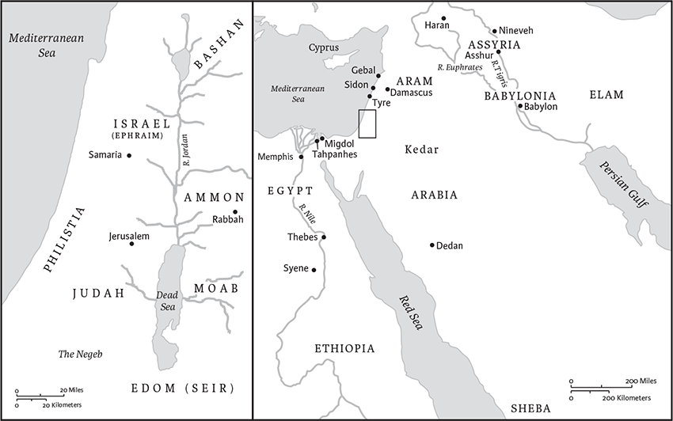
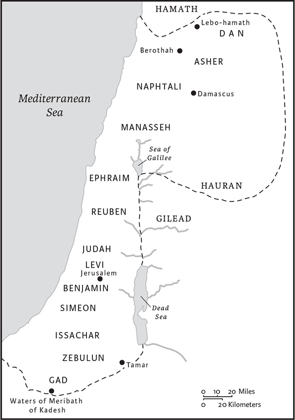

Ezekiel
Name
The book is named for the prophet to whom it is attributed. His name, “Ezekiel,” means “God strengthens.” God's strengthening turns out to be imperative for Ezekiel, whose rebellious audience is characterized by ingrained defiance and stubbornness; see 2.5n. (“rebellious house”); 3.8–9n. (“hard”).
Location in Canon
Ezekiel is the last of the three major prophets, the others being Isaiah and Jeremiah. Their books are arranged in presumed chronological order: the first part of the book of Isaiah focuses on the prophet Isaiah's ministry in Jerusalem in the late eighth century bce; the prophet Jeremiah was active in the late seventh and early sixth centuries; and Ezekiel's prophecies follow those of Jeremiah, his older contemporary. (In Christian canons, following the order of the Septuagint [LXX], Lamentations comes between Jeremiah and Ezekiel.) According to the Talmud and in some manuscripts there was another order for the major prophets, in which Ezekiel's combined message of judgment and salvation appears between Jeremiah's predominant tone of sorrow and Isaiah's emphatic promises.
Authorship
The only information we have about the prophet comes from the book itself. In this collection, God's divine prerogative overshadows and submerges the prophetic personality. Since Ezekiel is a literary character within his own prophecies, his shocking and mystifying actions must often be interpreted in a highly symbolic and theological manner, not necessarily as a window into the prophet's actual personality.
Some facts seem established. Ezekiel was a Judean exile in Babylonia, living in the deportee settlement of Tel-abib (see 3.15n.). His prophetic career stretched from 593 to at least 571 bce. The prophet and his school— the followers who edited and preserved his prophecies—were members of a lineage of priests in Israel known as the Zadokites (see 1.1–3n.; 44.15–31n.).
At the time of Ezekiel's exile, the Zadokites controlled the Israelite high priesthood and held power at the Jerusalem Temple. They took a specific priestly theology with them into exile, preserved elsewhere in the Hebrew Bible as a source of the Pentateuch known as the “Holiness School.” The priestly theology of the Holiness School thoroughly infuses the book of Ezekiel.
Date of Composition and Historical Context
Ezekiel wrote his prophecies, and his followers edited, expanded, and preserved them, in the sixth century bce in Babylonia, during the exile of the Judeans from their homeland. The Exile thus forms the historical context of the book, and at several points, particularly in the allegory in 17.1–24, Ezekiel refers to the Babylonian subjugation of Judah.
The Babylonians under Nebuchadrezzar II (r. 605–562 bce) defeated the Egyptians in 605 at the battle of Carchemish. The Egyptians had allied with the great Assyrian empire, which the Babylonians destroyed between 614 and 609. Although these victories made Babylonia the leading political power in Syria-Palestine, including the territory of Judah, the Judeans, often acting in concert with other neighboring states, eventually rebelled. The Babylonians, in an escalating response to the continued efforts of the Judeans to throw them off, exiled the Judeans in two phases, spaced about a decade apart. They first besieged Jerusalem in 597 during the reign of King Jehoiakim, who died during the siege. When his successor, his son Jehoiachin, surrendered to the Babylonians, he, along with many of the Judean ruling class, was exiled to Babylon. The Babylonians installed a puppet king, Zedekiah; when he, too, attempted to rebel, they destroyed Jerusalem and the Temple in 586, and exiled about twenty-five percent of the population, mostly the wealthy, skilled, and educated, to Babylonia. (A third deportation is reported in 581.)
Ezekiel was among the first group of exiles, taken to Babylonia in 597. Even so, he remained well informed about events in Judah, and his prophecies concern both the exiles and those who remained in Judah. He could address both communities as a single entity, since they were in frequent contact with each other, and both were passionately concerned about the fate of Jerusalem. Neither group accepted Ezekiel's indictment of their guilt or believed his prophecies about Jerusalem's coming destruction. After the destruction took place, the prophet's words turned to themes of renewed hope, regeneration, and blessing.
Literary History
The prophet and his followers composed the book in writing and preserved it for the specific purpose of instructing readers at a later time. The written composition and the careful preservation of Ezekiel contrast with much of the other prophetic literature in the Bible, which was spoken directly to a contemporaneous audience. Many of the words of prophets, such as Isaiah, were written down only a considerable time after they had been spoken; therefore they could be, and often were, modified to adapt them to situations that arose in later times. In Ezekiel, however, there are clear indications of an originally written composition and of an early intention to preserve the text. For instance, the thoroughgoing chronological notations show that Ezekiel and his followers took great care to demonstrate the timeliness and veracity of Ezekiel's oracles, and thereby their authority as prophecy. Ezekiel's character as a literary text also makes it a complex book to read and interpret. Much of the other prophetic material of the Bible, as oral literature, generally uses less elaborate forms; Ezekiel, however, is made up of intricate, deliberately composed literary creations. Although some scholars have viewed such literary ornamentation and intricacy as indicating confused layers of literary growth, more recently scholars have argued for literary integrity in the texts, even when the final form has resulted from a process of transmission and editing. This care for the written text and its accurate transmission, as well as for the preservation of authoritative traditions such as the Holiness School material (see Interpretation), mark a breakthrough in the development of written scripture in Israel, and therefore help us to understand the historical processes that created the biblical canon over the centuries.
Structure and Contents
The book of Ezekiel is complex, but fortunately its organization and outline are agreeably simple. Chapters 1–24 are set before the fall of Jerusalem and are largely prophecies of doom against the city and against Judah. An extended body of material on Ezekiel's call to prophesy begins this section in chs 1–3. Chapters 25–32 are prophecies against foreign nations, forming a bridge between Ezekiel's initial message of doom and his ultimate message of hope. The hope comes in the prophecies of restoration, chs 33–48, dating from the time after Jerusalem's fall. Clearly the capture and destruction of Jerusalem in 586 bce was the critical moment in Ezekiel's prophetic career. The prophecies of restoration include an apocalyptic passage (chs 38–39) and an extended utopian vision of a restored Temple and land (chs 40–48).
The prophecies in the book of Ezekiel are among the most fascinating and puzzling writings in the Bible. The prophet expresses his thought through a variety of literary forms, including symbolic action reports, visions, allegories, denunciations, and legal arguments. He sometimes uses bizarre or extreme imagery and elaborates it to an almost excessive point. He has inspired fear, awe, and wonder in readers because he attempts not merely to name but also to embody God's sovereignty, holiness, and mystery in words that come close to the limits of expression.
The style of Ezekiel does not always render reality by direct representation. Instead, it probes behind or beyond observable things and events, using metaphors and mythic poetry to portray the underlying structure of existence or the transcendent realities beneath both plain sensory observation and historical records. The visions in Ezekiel show both inner and outer realities, going beyond or abolishing normal sensory and temporal bounds.
Because of these literary qualities, reading Ezekiel requires a sophisticated approach, in order to avoid mistaking some of the descriptions for historical events, observable behaviors, or factual reports. For example, some interpretations of Ezekiel's behavior take it as evidence of a disoriented or abnormal personality. But the descriptions of these acts—such as muteness (3.22–27), holding prolonged, agonizing postures (4.4–8), and a failure to mourn (24.15–27)—are not evidence of psychological illness but are instead literary images that have rich theological import. The book portrays Ezekiel engaging in bizarre and disturbing behavior in order to provoke recollection of preceding scripture and intense theological reflection. A profound reorientation in the relationship of God and Israel is imminent, the authors believe, and they ask their audience to detect radical implications for life and faith in the metaphorical and parabolic character of their descriptions.
Interpretation
Ezekiel and his editors were Jerusalem priests at the center of Judean society, whose traditions emphasized God's tangible dwelling in Jerusalem's Temple as his home, and the protection and sanctification of God's people that resulted from this divine presence. The exile of the Judean elite and the destruction of Jerusalem directly challenged this theology, since they called into question God's promises to dwell among the Israelites and be their God (Ex 29.45–46). Ezekiel answered these challenges with cosmic, eschatological, and apocalyptic visions of a rebuilt Israel that will fulfill God's promises despite the fall of the earthly Jerusalem (see 1.22–25n., 26–28n.; 37.28n.; 38.12n.; 43.7n.; 48.35n.). In these visions particularly, Ezekiel anticipated much that was yet to come in the biblical writings, including later developments of apocalypticism (see especially Dan 7–12 and, in the New Testament, the book of Revelation).
The specific language and laws of the priests and the traditions of the Temple heavily influenced Ezekiel as a Zadokite. A significant body of these traditions, the “Holiness School” (HS), can be found in the Pentateuch. The Holiness School material extends beyond the confines of Lev 17–26 (known as the “Holiness Code” or “Holiness Collection”), and includes other parts of the Pentateuch often identified as belonging to the Priestly source (P). The relationship between God and Israel assumed by the Holiness School is that of a vassal covenant (see Lev 26.9,15,25), a type of agreement in which guarantees on one side are specifically linked to responsibilities on the other, with significant sanctions if the responsibilities of vassalage are not met. For Ezekiel, this covenant form proved invaluable in interpreting the Exile, since it allowed for the possibility that defilement, injustice, and covenant infidelity on Israel's part could lead to punishments, including exile, without annulling God's eternal promises to Israel (Lev 26.42).
In his allegory of the unfaithful wife (ch 16), the prophet rehearses the failed history of the Israelites’ vassal covenant with God. As in a marriage, with all its mutual obligations, God “pledged myself to you and entered into a covenant with you” (16.8). Because Jerusalem proved an adulterous wife, however, God determines to divorce her and expose her to be stoned (16.40; cf. Lev 20.10 [HS]). Jerusalem is doomed, because the people have “despised the oath, breaking the covenant” (16.59; cf. 17.19).
For the Holiness School, God's land is a delicately organized structure of holiness, subject to overthrow through the spread of uncleanness and bloodshed. It is like an uneasy stomach, ready to vomit out those who defile it (Lev 18.24–28). Ezekiel, in 36.16–19, insists that just such regurgitation has now happened. The land has fallen victim to defilement, and God's people have lost possession of it just as the Holiness School warned they would. Defiling any part of the land, God's holy territory, constitutes an assault of impurity on God's shrine (Lev 15.31; 19.30; 26.2; Num 5.3; 19.13; Ezek 8.6; 9.9). If the pollution of the sanctuary becomes willful and chronic, it will eventually force out God's glory (Num 35.34; Ezek 10.19; 11.22–23). Exposed to catastrophic judgment, the people become cut off (Ezek 37.11).
Despite Israel's lack of obedience to the covenant, Ezekiel prophesies a renewed covenantal relationship after the Exile (14.11; 16.60,62). God will guarantee this new vassal covenant's success by transplanting new obedient hearts into the people (11.19–20; 16.60; 36.26–28; 37.23–27). Under God's new plan, the people will “follow my statutes and keep my ordinances and obey them. Then they shall be my people, and I will be their God” (11.20; cf. 36.27; Lev 26.12 [HS]).
The Holiness School stresses the unique sacredness of the people and land of Israel, in the midst of which dwells the glory of the Lord, God's embodied presence. This sacredness includes not only ritual and worship but also morality and social justice. The tangible dwelling of God's glory in the Temple at the center of Israel brings sanctity to all people and groups arrayed around it. It means the realization of Lev 20.26, where God proclaims: “You shall be holy to me; for I the Lord am holy, and I have separated you from the other peoples to be mine.”
Since Israel is so intimately associated with God in this theology, the people must constantly grow in personal and collective holiness through their interaction with the divine presence (Ezek 11.12; 20.12; 37.28; Lev 11.44–45; 19.2; 20.7,26 [HS]). God's people, in Ezekiel's ideal world, emulate the holiness of God that sojourns in their midst (37.27; 43.9; cf. Ex 25.8; 29.45–46; 40.34; Lev 26.11; Num 5.3; 35.34 [HS]). From the midst of Israel, God radiates the divine holiness out to the entire land and to every sector of society (37.28; cf. Ex 31.13; Lev 21.15,23; 22.32 [HS]).
Stephen L. Cook
1 In the thirtieth year, in the fourth month, on the fifth day of the month, as I was among the exiles by the river Chebar, the heavens were opened, and I saw visions of God. 2On the fifth day of the month (it was the fifth year of the exile of King Jehoiachin), 3the word of the Lord came to the priest Ezek iel son of Buzi, in the land of the Chal-deans by the river Chebar; and the hand of the Lord was on him there.
4As I looked, a stormy wind came out of the north: a great cloud with brightness around it and fire flashing forth continually, and in the middle of the fire, something like gleaming amber. 5In the middle of it was something like four living creatures. This was their appearance: they were of human form. 6Each had four faces, and each of them had four wings. 7Their legs were straight, and the soles of their feet were like the sole of a calf's foot; and they sparkled like burnished bronze. 8Under their wings on their four sides they had human hands. And the four had their faces and their wings thus: 9their wings touched one another; each of them moved straight ahead, without turning as they moved. 10As for the appearance of their faces: the four had the face of a human being, the face of a lion on the right side, the face of an ox on the left side, and the face of an eagle; 11such were their faces. Their wings were spread out above; each creature had two wings, each of which touched the wing of another, while two covered their bodies. 12Each moved straight ahead; wherever the spirit would go, they went, without turning as they went. 13In the middle of a the living creatures there was something that looked like burning coals of fire, like torches moving to and fro among the living creatures; the fire was bright, and lightning issued from the fire. 14The living creatures darted to and fro, like a flash of lightning.
15As I looked at the living creatures, I saw a wheel on the earth beside the living creatures, one for each of the four of them.b 16As for the appearance of the wheels and their construction: their appearance was like the gleaming of beryl; and the four had the same form, their construction being something like a wheel within a wheel. 17When they moved, they moved in any of the four directions without veering as they moved. 18Their rims were tall and awesome, for the rims of all four were full of eyes all around. 19When the living creatures moved, the wheels moved beside them; and when the living creatures rose from the earth, the wheels rose. 20Wherever the spirit would go, they went, and the wheels rose along with them; for the spirit of the living creatures was in the wheels. 21When they moved, the others moved; when they stopped, the others stopped; and when they rose from the earth, the wheels rose along with them; for the spirit of the living creatures was in the wheels.
22Over the heads of the living creatures there was something like a dome, shining like crystal,a spread out above their heads. 23Under the dome their wings were stretched out straight, one toward another; and each of the creatures had two wings covering its body. 24When they moved, I heard the sound of their wings like the sound of mighty waters, like the thunder of the Almighty,b a sound of tumult like the sound of an army; when they stopped, they let down their wings. 25And there came a voice from above the dome over their heads; when they stopped, they let down their wings.
26And above the dome over their heads there was something like a throne, in ap pearance like sapphire;c and seated above the likeness of a throne was something that seemed like a human form. 27Upward from what appeared like the loins I saw something like gleaming amber, something that looked like fire enclosed all around; and downward from what looked like the loins I saw something that looked like fire, and there was a splendor all around. 28Like the bow in a cloud on a rainy day, such was the appearance of the splendor all around. This was the appearance of the likeness of the glory of the Lord.
When I saw it, I fell on my face, and I heard the voice of someone speaking.
2 He said to me: O mortal,d stand up on your feet, and I will speak with you. 2And when he spoke to me, a spirit entered into me and set me on my feet; and I heard him speaking to me. 3He said to me, Mortal, I am sending you to the people of Israel, to a natione of rebels who have rebelled against me; they and their ancestors have transgressed against me to this very day. 4The descendants are impudent and stubborn. I am sending you to them, and you shall say to them, “Thus says the Lord God.” 5Whether they hear or refuse to hear (for they are a rebellious house), they shall know that there has been a prophet among them. 6And you, O mortal, do not be afraid of them, and do not be afraid of their words, though briers and thorns surround you and you live among scorpions; do not be afraid of their words, and do not be dismayed at their looks, for they are a rebellious house. 7You shall speak my words to them, whether they hear or refuse to hear; for they are a rebellious house.
8But you, mortal, hear what I say to you; do not be rebellious like that rebellious house; open your mouth and eat what I give you. 9I looked, and a hand was stretched out to me, and a written scroll was in it. 10He spread it before me; it had writing on the front and on the back, and written on it were words of lamentation and mourning and woe.
3 He said to me, O mortal, eat what is offered to you; eat this scroll, and go, speak to the house of Israel. 2So I opened my mouth, and he gave me the scroll to eat. 3He said to me, Mortal, eat this scroll that I give you and fill your stomach with it. Then I ate it; and in my mouth it was as sweet as honey.
4He said to me: Mortal, go to the house of Israel and speak my very words to them. 5For you are not sent to a people of obscure speech and difficult language, but to the house of Israel— 6not to many peoples of obscure speech and difficult language, whose words you cannot understand. Surely, if I sent you to them, they would listen to you. 7But the house of Israel will not listen to you, for they are not willing to listen to me; because all the house of Israel have a hard forehead and a stubborn heart. 8See, I have made your face hard against their faces, and your forehead hard against their foreheads. 9Like the hardest stone, harder than flint, I have made your forehead; do not fear them or be dismayed at their looks, for they are a rebellious house. 10He said to me: Mortal, all my words that I shall speak to you receive in your heart and hear with your ears; 11then go to the exiles, to your people, and speak to them. Say to them, “Thus says the Lord God”; whether they hear or refuse to hear.
12Then the spirit lifted me up, and as the glory of the Lord rosea from its place, I heard behind me the sound of loud rumbling; 13it was the sound of the wings of the living creatures brushing against one another, and the sound of the wheels beside them, that sounded like a loud rumbling. 14The spirit lifted me up and bore me away; I went in bitterness in the heat of my spirit, the hand of the Lord being strong upon me. 15I came to the exiles at Tel-abib, who lived by the river Chebar.b And I sat there among them, stunned, for seven days.
16At the end of seven days, the word of the Lord came to me: 17Mortal, I have made you a sentinel for the house of Israel; whenever you hear a word from my mouth, you shall give them warning from me. 18If I say to the wicked, “You shall surely die,” and you give them no warning, or speak to warn the wicked from their wicked way, in order to save their life, those wicked persons shall die for their iniquity; but their blood I will require at your hand. 19But if you warn the wicked, and they do not turn from their wickedness, or from their wicked way, they shall die for their iniquity; but you will have saved your life. 20Again, if the righteous turn from their righteousness and commit iniquity, and I lay a stumbling block before them, they shall die; because you have not warned them, they shall die for their sin, and their righteous deeds that they have done shall not be remembered; but their blood I will require at your hand. 21If, however, you warn the righteous not to sin, and they do not sin, they shall surely live, because they took warning; and you will have saved your life.
22Then the hand of the Lord was upon me there; and he said to me, Rise up, go out into the valley, and there I will speak with you. 23So I rose up and went out into the valley; and the glory of the Lord stood there, like the glory that I had seen by the river Chebar; and I fell on my face. 24The spirit entered into me, and set me on my feet; and he spoke with me and said to me: Go, shut yourself inside your house. 25As for you, mortal, cords shall be placed on you, and you shall be bound with them, so that you cannot go out among the people; 26and I will make your tongue cling to the roof of your mouth, so that you shall be speechless and unable to reprove them; for they are a rebellious house. 27But when I speak with you, I will open your mouth, and you shall say to them, “Thus says the Lord God”; let those who will hear, hear; and let those who refuse to hear, refuse; for they are a rebellious house.
4 And you, O mortal, take a brick and set it before you. On it portray a city, Jerusalem; 2and put siegeworks against it, and build a siege wall against it, and cast up a ramp against it; set camps also against it, and plant battering rams against it all around. 3Then take an iron plate and place it as an iron wall between you and the city; set your face toward it, and let it be in a state of siege, and press the siege against it. This is a sign for the house of Israel.
4Then lie on your left side, and place the punishment of the house of Israel upon it; you shall bear their punishment for the number of the days that you lie there. 5For I assign to you a number of days, three hundred ninety days, equal to the number of the years of their punishment; and so you shall bear the punishment of the house of Israel. 6When you have completed these, you shall lie down a second time, but on your right side, and bear the punishment of the house of Judah; forty days I assign you, one day for each year. 7You shall set your face toward the siege of Jerusalem, and with your arm bared you shall prophesy against it. 8See, I am putting cords on you so that you cannot turn from one side to the other until you have completed the days of your siege.
9And you, take wheat and barley, beans and lentils, millet and spelt; put them into one vessel, and make bread for yourself. During the number of days that you lie on your side, three hundred ninety days, you shall eat it. 10The food that you eat shall be twenty shekels a day by weight; at fixed times you shall eat it. 11And you shall drink water by measure, one-sixth of a hin; at fixed times you shall drink. 12You shall eat it as a barley-cake, baking it in their sight on human dung. 13The Lord said, “Thus shall the people of Israel eat their bread, unclean, among the nations to which I will drive them.” 14Then I said, “Ah Lord God! I have never defiled myself; from my youth up until now I have never eaten what died of itself or was torn by animals, nor has carrion flesh come into my mouth.” 15Then he said to me, “See, I will let you have cow's dung instead of human dung, on which you may prepare your bread.”
16Then he said to me, Mortal, I am going to break the staff of bread in Jerusalem; they shall eat bread by weight and with fearfulness; and they shall drink water by measure and in dismay. 17Lacking bread and water, they will look at one another in dismay, and waste away under their punishment.
5 And you, O mortal, take a sharp sword; use it as a barber's razor and run it over your head and your beard; then take balances for weighing, and divide the hair. 2One third of the hair you shall burn in the fire inside the city, when the days of the siege are completed; one third you shall take and strike with the sword all around the city;a and one third you shall scatter to the wind, and I will unsheathe the sword after them. 3Then you shall take from these a small number, and bind them in the skirts of your robe. 4From these, again, you shall take some, throw them into the fire and burn them up; from there a fire will come out against all the house of Israel.
5Thus says the Lord God: This is Jerusalem; I have set her in the center of the nations, with countries all around her. 6But she has rebelled against my ordinances and my statutes, becoming more wicked than the nations and the countries all around her, rejecting my ordinances and not following my statutes. 7Therefore thus says the Lord God: Because you are more turbulent than the nations that are all around you, and have not followed my statutes or kept my ordinances, but have acted according to the ordinances of the nations that are all around you; 8therefore thus says the Lord God: I, I myself, am coming against you; I will execute judgments among you in the sight of the nations. 9And because of all your abominations, I will do to you what I have never yet done, and the like of which I will never do again. 10Surely, parents shall eat their children in your midst, and children shall eat their parents; I will execute judgments on you, and any of you who survive I will scatter to every wind. 11Therefore, as I live, says the Lord God, surely, because you have defiled my sanctuary with all your detestable things and with all your abominations—therefore I will cut you down;a my eye will not spare, and I will have no pity. 12One third of you shall die of pestilence or be consumed by famine among you; one third shall fall by the sword around you; and one third I will scatter to every wind and will unsheathe the sword after them.
13My anger shall spend itself, and I will vent my fury on them and satisfy myself; and they shall know that I, the Lord, have spoken in my jealousy, when I spend my fury on them. 14Moreover I will make you a desolation and an object of mocking among the nations around you, in the sight of all that pass by. 15You shall beb a mockery and a taunt, a warning and a horror, to the nations around you, when I execute judgments on you in anger and fury, and with furious punishments—I, the Lord, have spoken— 16when I loose against youc my deadly arrows of famine, arrows for destruction, which I will let loose to destroy you, and when I bring more and more famine upon you, and break your staff of bread. 17I will send famine and wild animals against you, and they will rob you of your children; pestilence and bloodshed shall pass through you; and I will bring the sword upon you. I, the Lord, have spoken.
6 The word of the Lord came to me: 2O mortal, set your face toward the mountains of Israel, and prophesy against them, 3and say, You mountains of Israel, hear the word of the Lord God! Thus says the Lord God to the mountains and the hills, to the ravines and the valleys: I, I myself will bring a sword upon you, and I will destroy your high places. 4Your altars shall become desolate, and your incense stands shall be broken; and I will throw down your slain in front of your idols. 5I will lay the corpses of the people of Israel in front of their idols; and I will scatter your bones around your altars. 6Wherever you live, your towns shall be waste and your high places ruined, so that your altars will be waste and ruined,a your idols broken and destroyed, your incense stands cut down, and your works wiped out. 7The slain shall fall in your midst; then you shall know that I am the Lord.
8But I will spare some. Some of you shall escape the sword among the nations and be scattered through the countries. 9Those of you who escape shall remember me among the nations where they are carried captive, how I was crushed by their wanton heart that turned away from me, and their wanton eyes that turned after their idols. Then they will be loathsome in their own sight for the evils that they have committed, for all their abominations. 10And they shall know that I am the Lord; I did not threaten in vain to bring this disaster upon them.
11Thus says the Lord God: Clap your hands and stamp your foot, and say, Alas for all the vile abominations of the house of Israel! For they shall fall by the sword, by famine, and by pestilence. 12Those far off shall die of pestilence; those nearby shall fall by the sword; and any who are left and are spared shall die of famine. Thus I will spend my fury upon them. 13And you shall know that I am the Lord, when their slain lie among their idols around their altars, on every high hill, on all the mountain tops, under every green tree, and under every leafy oak, wherever they offered pleasing odor to all their idols. 14I will stretch out my hand against them, and make the land desolate and waste, throughout all their settlements, from the wilderness to Riblah.b Then they shall know that I am the Lord.
7 The word of the Lord came to me: 2You, O mortal, thus says the Lord God to the land of Israel:
An end! The end has come
upon the four corners of the land.
3Now the end is upon you,
I will let loose my anger upon you;
I will judge you according to your ways,
I will punish you for all your abominations.
4My eye will not spare you, I will have no pity.
I will punish you for your ways,
while your abominations are among you.
Then you shall know that I am the Lord.
5Thus says the Lord God:
Disaster after disaster! See, it comes.
6An end has come, the end has come.
It has awakened against you; see, it comes!
O inhabitant of the land.
The time has come, the day is near—
of tumult, not of reveling on the mountains.
8Soon now I will pour out my wrath upon you;
I will spend my anger against you.
I will judge you according to your ways,
and punish you for all your abominations.
9My eye will not spare; I will have no pity.
I will punish you according to your ways,
while your abominations are among you.
Then you shall know that it is I the Lord who strike.
10See, the day! See, it comes!
Your dooma has gone out.
The rod has blossomed, pride has budded.
11Violence has grown into a rod of wickedness.
None of them shall remain,
not their abundance, not their wealth;
no pre-eminence among them.a
12The time has come, the day draws near;
let not the buyer rejoice, nor the seller mourn,
for wrath is upon all their multitude.
13For the sellers shall not return to what has been sold as long as they remain alive. For the vision concerns all their multitude; it shall not be revoked. Because of their iniquity, they cannot maintain their lives.a
14They have blown the horn and made everything ready;
but no one goes to battle,
for my wrath is upon all their multitude.
15The sword is outside, pestilence and
famine are inside;
those in the field die by the sword;
those in the city—famine and pestilence devour them.
16If any survivors escape,
they shall be found on the mountains
like doves of the valleys,
all of them moaning over their iniquity.
17All hands shall grow feeble,
all knees turn to water.
18They shall put on sackcloth,
horror shall cover them.
Shame shall be on all faces,
baldness on all their heads.
19They shall fling their silver into the streets,
their gold shall be treated as unclean.
Their silver and gold cannot save them on the day of the wrath of the Lord. They shall not satisfy their hunger or fill their stomachs with it. For it was the stumbling block of their iniquity. 20From theirb beautiful ornament, in which they took pride, they made their abominable images, their detestable things; therefore I will make of it an unclean thing to them.
21I will hand it over to strangers as booty,
to the wicked of the earth as plunder;
they shall profane it.
22I will avert my face from them,
so that they may profane my treasuredc place;
the violent shall enter it,
they shall profane it.
23Make a chain!a
For the land is full of bloody crimes;
the city is full of violence.
24I will bring the worst of the nations
to take possession of their houses.
I will put an end to the arrogance of the strong,
and their holy places shall be profaned.
25When anguish comes, they will seek peace,
but there shall be none.
26Disaster comes upon disaster,
rumor follows rumor;
they shall keep seeking a vision from the prophet;
instruction shall perish from the priest,
and counsel from the elders.
27The king shall mourn,
the prince shall be wrapped in despair,
and the hands of the people of the land shall tremble.
According to their way I will deal with them;
according to their own judgments I will judge them.
And they shall know that I am the Lord.
8 In the sixth year, in the sixth month, on the fifth day of the month, as I sat in my house, with the elders of Judah sitting before me, the hand of the Lord God fell upon me there. 2I looked, and there was a figure that looked like a human being;a below what appeared to be its loins it was fire, and above the loins it was like the appearance of brightness, like gleaming amber. 3It stretched out the form of a hand, and took me by a lock of my head; and the spirit lifted me up between earth and heaven, and brought me in visions of God to Jerusalem, to the entrance of the gateway of the inner court that faces north, to the seat of the image of jealousy, which provokes to jealousy. 4And the glory of the God of Israel was there, like the vision that I had seen in the valley.
5Then Godb said to me, “O mortal, lift up your eyes now in the direction of the north.” So I lifted up my eyes toward the north, and there, north of the altar gate, in the entrance, was this image of jealousy. 6He said to me, “Mortal, do you see what they are doing, the great abominations that the house of Israel are committing here, to drive me far from my sanctuary? Yet you will see still greater abominations.”
7And he brought me to the entrance of the court; I looked, and there was a hole in the wall. 8Then he said to me, “Mortal, dig through the wall”; and when I dug through the wall, there was an entrance. 9He said to me, “Go in, and see the vile abominations that they are committing here.” 10So I went in and looked; there, portrayed on the wall all around, were all kinds of creeping things, and loathsome animals, and all the idols of the house of Israel. 11Before them stood seventy of the elders of the house of Israel, with Jaazaniah son of Shaphan standing among them. Each had his censer in his hand, and the fragrant cloud of incense was ascending. 12Then he said to me, “Mortal, have you seen what the elders of the house of Israel are doing in the dark, each in his room of images? For they say, ‘The Lord does not see us, the Lord has forsaken the land.’” 13He said also to me, “You will see still greater abominations that they are committing.”
14Then he brought me to the entrance of the north gate of the house of the Lord; women were sitting there weeping for Tammuz. 15Then he said to me, “Have you seen this, O mortal? You will see still greater abominations than these.”
16And he brought me into the inner court of the house of the Lord; there, at the entrance of the temple of the Lord, between the porch and the altar, were about twenty-five men, with their backs to the temple of the Lord, and their faces toward the east, prostrating themselves to the sun toward the east. 17Then he said to me, “Have you seen this, O mortal? Is it not bad enough that the house of Judah commits the abominations done here? Must they fill the land with violence, and provoke my anger still further? See, they are putting the branch to their nose! 18Therefore I will act in wrath; my eye will not spare, nor will I have pity; and though they cry in my hearing with a loud voice, I will not listen to them.”
9 Then he cried in my hearing with a loud voice, saying, “Draw near, you executioners of the city, each with his destroying weapon in his hand.” 2And six men came from the direction of the upper gate, which faces north, each with his weapon for slaughter in his hand; among them was a man clothed in linen, with a writing case at his side. They went in and stood beside the bronze altar.
3Now the glory of the God of Israel had gone up from the cherub on which it rested to the threshold of the house. The Lord called to the man clothed in linen, who had the writing case at his side; 4and said to him, “Go through the city, through Jerusalem, and put a mark on the foreheads of those who sigh and groan over all the abominations that are committed in it.” 5To the others he said in my hearing, “Pass through the city after him, and kill; your eye shall not spare, and you shall show no pity. 6Cut down old men, young men and young women, little children and women, but touch no one who has the mark. And begin at my sanctuary.” So they began with the elders who were in front of the house. 7Then he said to them, “Defile the house, and fill the courts with the slain. Go!” So they went out and killed in the city. 8While they were killing, and I was left alone, I fell prostrate on my face and cried out, “Ah Lord God! will you destroy all who remain of Israel as you pour out your wrath upon Jerusalem?” 9He said to me, “The guilt of the house of Israel and Judah is exceedingly great; the land is full of bloodshed and the city full of perversity; for they say, ‘The Lord has forsaken the land, and the Lord does not see.’ 10As for me, my eye will not spare, nor will I have pity, but I will bring down their deeds upon their heads.”
11Then the man clothed in linen, with the writing case at his side, brought back word, saying, “I have done as you commanded me.”
10 Then I looked, and above the dome that was over the heads of the cherubim there appeared above them something like a sapphire,a in form resembling a throne. 2He said to the man clothed in linen, “Go within the wheelwork underneath the cherubim; fill your hands with burning coals from among the cherubim, and scatter them over the city.” He went in as I looked on. 3Now the cherubim were standing on the south side of the house when the man went in; and a cloud filled the inner court. 4Then the glory of the Lord rose up from the cherub to the threshold of the house; the house was filled with the cloud, and the court was full of the brightness of the glory of the Lord. 5The sound of the wings of the cherubim was heard as far as the outer court, like the voice of God Almightyb when he speaks.
6When he commanded the man clothed in linen, “Take fire from within the wheel-work, from among the cherubim,” he went in and stood beside a wheel. 7And a cherub stretched out his hand from among the cherubim to the fire that was among the cherubim, took some of it and put it into the hands of the man clothed in linen, who took it and went out. 8The cherubim appeared to have the form of a human hand under their wings.
9I looked, and there were four wheels beside the cherubim, one beside each cherub; and the appearance of the wheels was like gleaming beryl. 10And as for their appearance, the four looked alike, something like a wheel within a wheel. 11When they moved, they moved in any of the four directions without veering as they moved; but in whatever direction the front wheel faced, the others followed without veering as they moved. 12Their entire body, their rims, their spokes, their wings, and the wheels—the wheels of the four of them—were full of eyes all around. 13As for the wheels, they were called in my hearing “the wheelwork.” 14Each one had four faces: the first face was that of the cherub, the second face was that of a human being, the third that of a lion, and the fourth that of an eagle.
15The cherubim rose up. These were the living creatures that I saw by the river Chebar. 16When the cherubim moved, the wheels moved beside them; and when the cherubim lifted up their wings to rise up from the earth, the wheels at their side did not veer. 17When they stopped, the others stopped, and when they rose up, the others rose up with them; for the spirit of the living creatures was in them.
18Then the glory of the Lord went out from the threshold of the house and stopped above the cherubim. 19The cherubim lifted up their wings and rose up from the earth in my sight as they went out with the wheels beside them. They stopped at the entrance of the east gate of the house of the Lord; and the glory of the God of Israel was above them.
20These were the living creatures that I saw underneath the God of Israel by the river Chebar; and I knew that they were cherubim. 21Each had four faces, each four wings, and underneath their wings something like human hands. 22As for what their faces were like, they were the same faces whose appearance I had seen by the river Chebar. Each one moved straight ahead.
11 The spirit lifted me up and brought me to the east gate of the house of the Lord, which faces east. There, at the entrance of the gateway, were twenty-five men; among them I saw Jaazaniah son of Azzur, and Pelatiah son of Benaiah, officials of the people. 2He said to me, “Mortal, these are the men who devise iniquity and who give wicked counsel in this city; 3they say, ‘The time is not near to build houses; this city is the pot, and we are the meat.’ 4Therefore prophesy against them; prophesy, O mortal.”
5Then the spirit of the Lord fell upon me, and he said to me, “Say, Thus says the Lord: This is what you think, O house of Israel; I know the things that come into your mind. 6You have killed many in this city, and have filled its streets with the slain. 7Therefore thus says the Lord God: The slain whom you have placed within it are the meat, and this city is the pot; but you shall be taken out of it. 8You have feared the sword; and I will bring the sword upon you, says the Lord God. 9I will take you out of it and give you over to the hands of foreigners, and execute judgments upon you. 10You shall fall by the sword; I will judge you at the border of Israel. And you shall know that I am the Lord. 11This city shall not be your pot, and you shall not be the meat inside it; I will judge you at the border of Israel. 12Then you shall know that I am the Lord, whose statutes you have not followed, and whose ordinances you have not kept, but you have acted according to the ordinances of the nations that are around you.”
13Now, while I was prophesying, Pelatiah son of Benaiah died. Then I fell down on my face, cried with a loud voice, and said, “Ah Lord God! will you make a full end of the remnant of Israel?”
14Then the word of the Lord came to me: 15Mortal, your kinsfolk, your own kin, your fellow exiles,a the whole house of Israel, all of them, are those of whom the inhabitants of Jerusalem have said, “They have gone far from the Lord; to us this land is given for a possession.” 16Therefore say: Thus says the Lord God: Though I removed them far away among the nations, and though I scattered them among the countries, yet I have been a sanctuary to them for a little whilea in the countries where they have gone. 17Therefore say: Thus says the Lord God: I will gather you from the peoples, and assemble you out of the countries where you have been scattered, and I will give you the land of Israel. 18When they come there, they will remove from it all its detestable things and all its abominations. 19I will give them oneb heart, and put a new spirit within them; I will remove the heart of stone from their flesh and give them a heart of flesh, 20so that they may follow my statutes and keep my ordinances and obey them. Then they shall be my people, and I will be their God. 21But as for those whose heart goes after their detestable things and their abominations,c I will bring their deeds upon their own heads, says the Lord God.
22Then the cherubim lifted up their wings, with the wheels beside them; and the glory of the God of Israel was above them. 23And the glory of the Lord ascended from the middle of the city, and stopped on the mountain east of the city. 24The spirit lifted me up and brought me in a vision by the spirit of God into Chaldea, to the exiles. Then the vision that I had seen left me. 25And I told the exiles all the things that the Lord had shown me.
12 The word of the Lord came to me: 2Mortal, you are living in the midst of a rebellious house, who have eyes to see but do not see, who have ears to hear but do not hear; 3for they are a rebellious house. Therefore, mortal, prepare for yourself an exile's baggage, and go into exile by day in their sight; you shall go like an exile from your place to another place in their sight. Perhaps they will understand, though they are a rebellious house. 4You shall bring out your baggage by day in their sight, as baggage for exile; and you shall go out yourself at evening in their sight, as those do who go into exile. 5Dig through the wall in their sight, and carry the baggage through it. 6In their sight you shall lift the baggage on your shoulder, and carry it out in the dark; you shall cover your face, so that you may not see the land; for I have made you a sign for the house of Israel.
7I did just as I was commanded. I brought out my baggage by day, as baggage for exile, and in the evening I dug through the wall with my own hands; I brought it out in the dark, carrying it on my shoulder in their sight.
8In the morning the word of the Lord came to me: 9Mortal, has not the house of Israel, the rebellious house, said to you, “What are you doing?” 10Say to them, “Thus says the Lord God: This oracle concerns the prince in Jerusalem and all the house of Israel in it.” 11Say, “I am a sign for you: as I have done, so shall it be done to them; they shall go into exile, into captivity.” 12And the prince who is among them shall lift his baggage on his shoulder in the dark, and shall go out; hed shall dig through the wall and carry it through; he shall cover his face, so that he may not see the land with his eyes. 13I will spread my net over him, and he shall be caught in my snare; and I will bring him to Babylon, the land of the Chaldeans, yet he shall not see it; and he shall die there. 14I will scatter to every wind all who are around him, his helpers and all his troops; and I will unsheathe the sword behind them. 15And they shall know that I am the Lord, when I disperse them among the nations and scatter them through the countries. 16But I will let a few of them escape from the sword, from famine and pestilence, so that they may tell of all their abominations among the nations where they go; then they shall know that I am the Lord.
17The word of the Lord came to me: 18Mortal, eat your bread with quaking, and drink your water with trembling and with fearfulness; 19and say to the people of the land, Thus says the Lord God concerning the inhabitants of Jerusalem in the land of Israel: They shall eat their bread with fearfulness, and drink their water in dismay, because their land shall be stripped of all it contains, on account of the violence of all those who live in it. 20The inhabited cities shall be laid waste, and the land shall become a desolation; and you shall know that I am the Lord.
21The word of the Lord came to me: 22Mortal, what is this proverb of yours about the land of Israel, which says, “The days are prolonged, and every vision comes to nothing”? 23Tell them therefore, “Thus says the Lord God: I will put an end to this proverb, and they shall use it no more as a proverb in Israel.” But say to them, The days are near, and the fulfillment of every vision. 24For there shall no longer be any false vision or flattering divination within the house of Israel. 25But I the Lord will speak the word that I speak, and it will be fulfilled. It will no longer be delayed; but in your days, O rebellious house, I will speak the word and fulfill it, says the Lord God.
26The word of the Lord came to me: 27Mortal, the house of Israel is saying, “The vision that he sees is for many years ahead; he prophesies for distant times.” 28Therefore say to them, Thus says the Lord God: None of my words will be delayed any longer, but the word that I speak will be fulfilled, says the Lord God.
13 The word of the Lord came to me: 2Mortal, prophesy against the prophets of Israel who are prophesying; say to those who prophesy out of their own imagination: “Hear the word of the Lord!” 3Thus says the Lord God, Alas for the senseless prophets who follow their own spirit, and have seen nothing! 4Your prophets have been like jackals among ruins, O Israel. 5You have not gone up into the breaches, or repaired a wall for the house of Israel, so that it might stand in battle on the day of the Lord. 6They have envisioned falsehood and lying divination; they say, “Says the Lord,” when the Lord has not sent them, and yet they wait for the fulfillment of their word! 7Have you not seen a false vision or uttered a lying divination, when you have said, “Says the Lord,” even though I did not speak?
8Therefore thus says the Lord God: Because you have uttered falsehood and envisioned lies, I am against you, says the Lord God. 9My hand will be against the prophets who see false visions and utter lying divinations; they shall not be in the council of my people, nor be enrolled in the register of the house of Israel, nor shall they enter the land of Israel; and you shall know that I am the Lord God. 10Because, in truth, because they have misled my people, saying, “Peace,” when there is no peace; and because, when the people build a wall, these prophetsa smear whitewash on it. 11Say to those who smear whitewash on it that it shall fall. There will be a deluge of rain,b great hailstones will fall, and a stormy wind will break out. 12When the wall falls, will it not be said to you, “Where is the whitewash you smeared on it?” 13Therefore thus says the Lord God: In my wrath I will make a stormy wind break out, and in my anger there shall be a deluge of rain, and hailstones in wrath to destroy it. 14I will break down the wall that you have smeared with whitewash, and bring it to the ground, so that its foundation will be laid bare; when it falls, you shall perish within it; and you shall know that I am the Lord. 15Thus I will spend my wrath upon the wall, and upon those who have smeared it with whitewash; and I will say to you, The wall is no more, nor those who smeared it— 16the prophets of Israel who prophesied concerning Jerusalem and saw visions of peace for it, when there was no peace, says the Lord God.
17As for you, mortal, set your face against the daughters of your people, who prophesy out of their own imagination; prophesy against them 18and say, Thus says the Lord God: Woe to the women who sew bands on all wrists, and make veils for the heads of persons of every height, in the hunt for human lives! Will you hunt down lives among my people, and maintain your own lives? 19You have profaned me among my people for handfuls of barley and for pieces of bread, putting to death persons who should not die and keeping alive persons who should not live, by your lies to my people, who listen to lies.
20Therefore thus says the Lord God: I am against your bands with which you hunt lives;c I will tear them from your arms, and let the lives go free, the lives that you hunt down like birds. 21I will tear off your veils, and save my people from your hands; they shall no longer be prey in your hands; and you shall know that I am the Lord. 22Because you have disheartened the righteous falsely, although I have not disheartened them, and you have encouraged the wicked not to turn from their wicked way and save their lives; 23therefore you shall no longer see false visions or practice divination; I will save my people from your hand. Then you will know that I am the Lord.
14 Certain elders of Israel came to me and sat down before me. 2And the word of the Lord came to me: 3Mortal, these men have taken their idols into their hearts, and placed their iniquity as a stumbling block before them; shall I let myself be consulted by them? 4Therefore speak to them, and say to them, Thus says the Lord God: Any of those of the house of Israel who take their idols into their hearts and place their iniquity as a stumbling block before them, and yet come to the prophet—I the Lord will answer those who come with the multitude of their idols, 5in order that I may take hold of the hearts of the house of Israel, all of whom are estranged from me through their idols.
6Therefore say to the house of Israel, Thus says the Lord God: Repent and turn away from your idols; and turn away your faces from all your abominations. 7For any of those of the house of Israel, or of the aliens who reside in Israel, who separate themselves from me, taking their idols into their hearts and placing their iniquity as a stumbling block before them, and yet come to a prophet to inquire of me by him, I the Lord will answer them myself. 8I will set my face against them; I will make them a sign and a byword and cut them off from the midst of my people; and you shall know that I am the Lord.
9If a prophet is deceived and speaks a word, I, the Lord, have deceived that prophet, and I will stretch out my hand against him, and will destroy him from the midst of my people Israel. 10And they shall bear their punishment—the punishment of the inquirer and the punishment of the prophet shall be the same— 11so that the house of Israel may no longer go astray from me, nor defile themselves any more with all their transgressions. Then they shall be my people, and I will be their God, says the Lord God.
12The word of the Lord came to me: 13Mortal, when a land sins against me by acting faithlessly, and I stretch out my hand against it, and break its staff of bread and send famine upon it, and cut off from it human beings and animals, 14even if Noah, Daniel,a and Job, these three, were in it, they would save only their own lives by their righteousness, says the Lord God. 15If I send wild animals through the land to ravage it, so that it is made desolate, and no one may pass through because of the animals; 16even if these three men were in it, as I live, says the Lord God, they would save neither sons nor daughters; they alone would be saved, but the land would be desolate. 17Or if I bring a sword upon that land and say, “Let a sword pass through the land,” and I cut off human beings and animals from it; 18though these three men were in it, as I live, says the Lord God, they would save neither sons nor daughters, but they alone would be saved. 19Or if I send a pestilence into that land, and pour out my wrath upon it with blood, to cut off humans and animals from it; 20even if Noah, Daniel,a and Job were in it, as I live, says the Lord God, they would save neither son nor daughter; they would save only their own lives by their righteousness.
21For thus says the Lord God: How much more when I send upon Jerusalem my four deadly acts of judgment, sword, famine, wild animals, and pestilence, to cut off humans and animals from it! 22Yet, survivors shall be left in it, sons and daughters who will be brought out; they will come out to you. When you see their ways and their deeds, you will be consoled for the evil that I have brought upon Jerusalem, for all that I have brought upon it. 23They shall console you, when you see their ways and their deeds; and you shall know that it was not without cause that I did all that I have done in it, says the Lord God.
15 The word of the Lord came to me:
2O mortal, how does the wood of the
vine surpass all other wood—
the vine branch that is among the trees of the forest?
3Is wood taken from it to make anything?
Does one take a peg from it on which to hang any object?
4It is put in the fire for fuel;
when the fire has consumed both ends of it
and the middle of it is charred,
is it useful for anything?
5When it was whole it was used for nothing;
how much less—when the fire has consumed it,
and it is charred—
can it ever be used for anything!
6Therefore thus says the Lord God: Like the wood of the vine among the trees of the forest, which I have given to the fire for fuel, so I will give up the inhabitants of Jerusalem. 7I will set my face against them; although they escape from the fire, the fire shall still consume them; and you shall know that I am the Lord, when I set my face against them. 8And I will make the land desolate, because they have acted faithlessly, says the Lord God.
16 The word of the Lord came to me: 2Mortal, make known to Jerusalem her abominations, 3and say, Thus says the Lord God to Jerusalem: Your origin and your birth were in the land of the Canaanites; your father was an Amorite, and your mother a Hittite. 4As for your birth, on the day you were born your navel cord was not cut, nor were you washed with water to cleanse you, nor rubbed with salt, nor wrapped in cloths. 5No eye pitied you, to do any of these things for you out of compassion for you; but you were thrown out in the open field, for you were abhorred on the day you were born.
6I passed by you, and saw you flailing about in your blood. As you lay in your blood, I said to you, “Live! 7and grow upa like a plant of the field.” You grew up and became tall and arrived at full womanhood;b your breasts were formed, and your hair had grown; yet you were naked and bare.
8I passed by you again and looked on you; you were at the age for love. I spread the edge of my cloak over you, and covered your nakedness: I pledged myself to you and entered into a covenant with you, says the Lord God, and you became mine. 9Then I bathed you with water and washed off the blood from you, and anointed you with oil. 10I clothed you with embroidered cloth and with sandals of fine leather; I bound you in fine linen and covered you with rich fabric.c 11I adorned you with ornaments: I put bracelets on your arms, a chain on your neck, 12a ring on your nose, earrings in your ears, and a beautiful crown upon your head. 13You were adorned with gold and silver, while your clothing was of fine linen, rich fabric,c and embroidered cloth. You had choice flour and honey and oil for food. You grew exceedingly beautiful, fit to be a queen. 14Your fame spread among the nations on account of your beauty, for it was perfect because of my splendor that I had bestowed on you, says the Lord God.
15But you trusted in your beauty, and played the whore because of your fame, and lavished your whorings on any passer-by.a 16You took some of your garments, and made for yourself colorful shrines, and on them played the whore; nothing like this has ever been or ever shall be.b 17You also took your beautiful jewels of my gold and my silver that I had given you, and made for yourself male images, and with them played the whore; 18and you took your embroidered garments to cover them, and set my oil and my incense before them. 19Also my bread that I gave you—I fed you with choice flour and oil and honey—you set it before them as a pleasing odor; and so it was, says the Lord God. 20You took your sons and your daughters, whom you had borne to me, and these you sacrificed to them to be devoured. As if your whorings were not enough! 21You slaughtered my children and delivered them up as an offering to them. 22And in all your abominations and your whorings you did not remember the days of your youth, when you were naked and bare, flailing about in your blood.
23After all your wickedness (woe, woe to you! says the Lord God), 24you built yourself a platform and made yourself a lofty place in every square; 25at the head of every street you built your lofty place and prostituted your beauty, offering yourself to every passer-by, and multiplying your whoring. 26You played the whore with the Egyptians, your lustful neighbors, multiplying your whoring, to provoke me to anger. 27Therefore I stretched out my hand against you, reduced your rations, and gave you up to the will of your enemies, the daughters of the Philistines, who were ashamed of your lewd behavior. 28You played the whore with the Assyrians, because you were insatiable; you played the whore with them, and still you were not satisfied. 29You multiplied your whoring with Chaldea, the land of merchants; and even with this you were not satisfied.
30How sick is your heart, says the Lord God, that you did all these things, the deeds of a brazen whore; 31building your platform at the head of every street, and making your lofty place in every square! Yet you were not like a whore, because you scorned payment. 32Adulterous wife, who receives strangers instead of her husband! 33Gifts are given to all whores; but you gave your gifts to all your lovers, bribing them to come to you from all around for your whorings. 34So you were different from other women in your whorings: no one solicited you to play the whore; and you gave payment, while no payment was given to you; you were different.
35Therefore, O whore, hear the word of the Lord: 36Thus says the Lord God, Because your lust was poured out and your nakedness uncovered in your whoring with your lovers, and because of all your abominable idols, and because of the blood of your children that you gave to them, 37therefore, I will gather all your lovers, with whom you took pleasure, all those you loved and all those you hated; I will gather them against you from all around, and will uncover your nakedness to them, so that they may see all your nakedness. 38I will judge you as women who commit adultery and shed blood are judged, and bring blood upon you in wrath and jealousy. 39I will deliver you into their hands, and they shall throw down your platform and break down your lofty places; they shall strip you of your clothes and take your beautiful objects and leave you naked and bare. 40They shall bring up a mob against you, and they shall stone you and cut you to pieces with their swords. 41They shall burn your houses and execute judgments on you in the sight of many women; I will stop you from playing the whore, and you shall also make no more payments. 42So I will satisfy my fury on you, and my jealousy shall turn away from you; I will be calm, and will be angry no longer. 43Because you have not remembered the days of your youth, but have enraged me with all these things; therefore, I have returned your deeds upon your head, says the Lord God.
Have you not committed lewdness beyond all your abominations? 44See, everyone who uses proverbs will use this proverb about you, “Like mother, like daughter.” 45You are the daughter of your mother, who loathed her husband and her children; and you are the sister of your sisters, who loathed their husbands and their children. Your mother was a Hittite and your father an Amorite. 46Your elder sister is Samaria, who lived with her daughters to the north of you; and your younger sister, who lived to the south of you, is Sodom with her daughters. 47You not only followed their ways, and acted according to their abominations; within a very little time you were more corrupt than they in all your ways. 48As I live, says the Lord God, your sister Sodom and her daughters have not done as you and your daughters have done. 49This was the guilt of your sister Sodom: she and her daughters had pride, excess of food, and prosperous ease, but did not aid the poor and needy. 50They were haughty, and did abominable things before me; therefore I removed them when I saw it. 51Samaria has not committed half your sins; you have committed more abominations than they, and have made your sisters appear righteous by all the abominations that you have committed. 52Bear your disgrace, you also, for you have brought about for your sisters a more favorable judgment; because of your sins in which you acted more abominably than they, they are more in the right than you. So be ashamed, you also, and bear your disgrace, for you have made your sisters appear righteous.
53I will restore their fortunes, the fortunes of Sodom and her daughters and the fortunes of Samaria and her daughters, and I will restore your own fortunes along with theirs, 54in order that you may bear your disgrace and be ashamed of all that you have done, becoming a consolation to them. 55As for your sisters, Sodom and her daughters shall return to their former state, Samaria and her daughters shall return to their former state, and you and your daughters shall return to your former state. 56Was not your sister Sodom a byword in your mouth in the day of your pride, 57before your wickedness was uncovered? Now you are a mockery to the daughters of Arama and all her neighbors, and to the daughters of the Philistines, those all around who despise you. 58You must bear the penalty of your lewdness and your abominations, says the Lord.
59Yes, thus says the Lord God: I will deal with you as you have done, you who have despised the oath, breaking the covenant; 60yet I will remember my covenant with you in the days of your youth, and I will establish with you an everlasting covenant. 61Then you will remember your ways, and be ashamed when Ia take your sisters, both your elder and your younger, and give them to you as daughters, but not on account of myb covenant with you. 62I will establish my covenant with you, and you shall know that I am the Lord, 63in order that you may remember and be confounded, and never open your mouth again because of your shame, when I forgive you all that you have done, says the Lord God.
17 The word of the Lord came to me: 2O mortal, propound a riddle, and speak an allegory to the house of Israel. 3Say: Thus says the Lord God:
A great eagle, with great wings and long pinions,
rich in plumage of many colors,
came to the Lebanon.
He took the top of the cedar,
4broke off its topmost shoot;
he carried it to a land of trade,
set it in a city of merchants.
5Then he took a seed from the land,
placed it in fertile soil;
a plantc by abundant waters,
he set it like a willow twig.
6It sprouted and became a vine
spreading out, but low;
its branches turned toward him,
its roots remained where it stood.
So it became a vine;
it brought forth branches,
put forth foliage.
7There was another great eagle,
with great wings and much plumage.
And see! This vine stretched out
its roots toward him;
it shot out its branches toward him,
so that he might water it.
From the bed where it was planted
8it was transplanted
to good soil by abundant waters,
so that it might produce branches
and bear fruit
and become a noble vine.
9Say: Thus says the Lord God:
Will it prosper?
Will he not pull up its roots,
cause its fruit to rotc and wither,
its fresh sprouting leaves to fade?
No strong arm or mighty army will be needed
to pull it from its roots.
10When it is transplanted, will it thrive?
When the east wind strikes it,
will it not utterly wither,
wither on the bed where it grew?
11Then the word of the Lord came to me:
12Say now to the rebellious house: Do you not know what these things mean? Tell them: The king of Babylon came to Jerusalem, took its king and its officials, and brought them back with him to Babylon. 13He took one of the royal offspring and made a covenant with him, putting him under oath (he had taken away the chief men of the land), 14so that the kingdom might be humble and not lift itself up, and that by keeping his covenant it might stand. 15But he rebelled against him by sending ambassadors to Egypt, in order that they might give him horses and a large army. Will he succeed? Can one escape who does such things? Can he break the covenant and yet escape? 16As I live, says the Lord God, surely in the place where the king resides who made him king, whose oath he despised, and whose covenant with him he broke—in Babylon he shall die. 17Pharaoh with his mighty army and great company will not help him in war, when ramps are cast up and siege walls built to cut off many lives. 18Because he despised the oath and broke the covenant, because he gave his hand and yet did all these things, he shall not escape. 19Therefore thus says the Lord God: As I live, I will surely return upon his head my oath that he despised, and my covenant that he broke. 20I will spread my net over him, and he shall be caught in my snare; I will bring him to Babylon and enter into judgment with him there for the treason he has committed against me. 21All the picka of his troops shall fall by the sword, and the survivors shall be scattered to every wind; and you shall know that I, the Lord, have spoken.
22Thus says the Lord God:
I myself will take a sprig
from the lofty top of a cedar;
I will set it out.
I will break off a tender one
from the topmost of its young twigs;
I myself will plant it
on a high and lofty mountain.
23On the mountain height of Israel
I will plant it,
in order that it may produce boughs and bear fruit,
and become a noble cedar.
Under it every kind of bird will live;
in the shade of its branches will nest
winged creatures of every kind.
24All the trees of the field shall know
that I am the Lord.
I bring low the high tree,
I make high the low tree;
I dry up the green tree
and make the dry tree flourish.
I the Lord have spoken;
I will accomplish it.
18 The word of the Lord came to me: 2What do you mean by repeating this proverb concerning the land of Israel, “The parents have eaten sour grapes, and the children's teeth are set on edge”? 3As I live, says the Lord God, this proverb shall no more be used by you in Israel. 4Know that all lives are mine; the life of the parent as well as the life of the child is mine: it is only the person who sins that shall die.
5If a man is righteous and does what is lawful and right— 6if he does not eat upon the mountains or lift up his eyes to the idols of the house of Israel, does not defile his neighbor's wife or approach a woman during her menstrual period, 7does not oppress anyone, but restores to the debtor his pledge, commits no robbery, gives his bread to the hungry and covers the naked with a garment, 8does not take advance or accrued interest, withholds his hand from iniquity, executes true justice between contending parties, 9follows my statutes, and is careful to observe my ordinances, acting faithfully—such a one is righteous; he shall surely live, says the Lord God.
10If he has a son who is violent, a shedder of blood, 11who does any of these things (though his fathera does none of them), who eats upon the mountains, defiles his neighbor's wife, 12oppresses the poor and needy, commits robbery, does not restore the pledge, lifts up his eyes to the idols, commits abomination, 13takes advance or accrued interest; shall he then live? He shall not. He has done all these abominable things; he shall surely die; his blood shall be upon himself.
14But if this man has a son who sees all the sins that his father has done, considers, and does not do likewise, 15who does not eat upon the mountains or lift up his eyes to the idols of the house of Israel, does not defile his neighbor's wife, 16does not wrong anyone, exacts no pledge, commits no robbery, but gives his bread to the hungry and covers the naked with a garment, 17withholds his hand from iniquity,b takes no advance or accrued interest, observes my ordinances, and follows my statutes; he shall not die for his father's iniquity; he shall surely live. 18As for his father, because he practiced extortion, robbed his brother, and did what is not good among his people, he dies for his iniquity.
19Yet you say, “Why should not the son suffer for the iniquity of the father?” When the son has done what is lawful and right, and has been careful to observe all my statutes, he shall surely live. 20The person who sins shall die. A child shall not suffer for the iniquity of a parent, nor a parent suffer for the iniquity of a child; the righteousness of the righteous shall be his own, and the wickedness of the wicked shall be his own.
21But if the wicked turn away from all their sins that they have committed and keep all my statutes and do what is lawful and right, they shall surely live; they shall not die. 22None of the transgressions that they have committed shall be remembered against them; for the righteousness that they have done they shall live. 23Have I any pleasure in the death of the wicked, says the Lord God, and not rather that they should turn from their ways and live? 24But when the righteous turn away from their righteousness and commit iniquity and do the same abominable things that the wicked do, shall they live? None of the righteous deeds that they have done shall be remembered; for the treachery of which they are guilty and the sin they have committed, they shall die.
25Yet you say, “The way of the Lord is unfair.” Hear now, O house of Israel: Is my way unfair? Is it not your ways that are unfair? 26When the righteous turn away from their righteousness and commit iniquity, they shall die for it; for the iniquity that they have committed they shall die. 27Again, when the wicked turn away from the wickedness they have committed and do what is lawful and right, they shall save their life. 28Because they considered and turned away from all the transgressions that they had committed, they shall surely live; they shall not die. 29Yet the house of Israel says, “The way of the Lord is unfair.” O house of Israel, are my ways unfair? Is it not your ways that are unfair?
30Therefore I will judge you, O house of Israel, all of you according to your ways, says the Lord God. Repent and turn from all your transgressions; otherwise iniquity will be your ruin.a 31Cast away from you all the transgressions that you have committed against me, and get yourselves a new heart and a new spirit! Why will you die, O house of Israel? 32For I have no pleasure in the death of anyone, says the Lord God. Turn, then, and live.
19 As for you, raise up a lamentation for the princes of Israel, 2and say:
What a lioness was your mother
among lions!
She lay down among young lions,
rearing her cubs.
3She raised up one of her cubs;
he became a young lion,
and he learned to catch prey;
he devoured humans.
4The nations sounded an alarm against him;
he was caught in their pit;
and they brought him with hooks
to the land of Egypt.
5When she saw that she was thwarted,
that her hope was lost,
she took another of her cubs
and made him a young lion.
6He prowled among the lions;
he became a young lion,
and he learned to catch prey;
he devoured people.
7And he ravaged their strongholds,b
and laid waste their towns;
the land was appalled, and all in it,
at the sound of his roaring.
8The nations set upon him
from the provinces all around;
they spread their net over him;
he was caught in their pit.
9With hooks they put him in a cage,
and brought him to the king of Babylon;
they brought him into custody,
so that his voice should be heard no more
on the mountains of Israel.
10Your mother was like a vine in a vineyardc
transplanted by the water,
fruitful and full of branches
from abundant water.
11Its strongest stem became
a ruler's scepter;a
it towered aloft
among the thick boughs;
it stood out in its height
with its mass of branches.
12But it was plucked up in fury,
cast down to the ground;
the east wind dried it up;
its fruit was stripped off,
its strong stem was withered;
the fire consumed it.
13Now it is transplanted into the wilderness,
into a dry and thirsty land.
14And fire has gone out from its stem,
has consumed its branches and fruit,
so that there remains in it no strong stem,
no scepter for ruling.
This is a lamentation, and it is used as a lamentation.
20 In the seventh year, in the fifth month, on the tenth day of the month, certain elders of Israel came to consult the Lord, and sat down before me. 2And the word of the Lord came to me: 3Mortal, speak to the elders of Israel, and say to them: Thus says the Lord God: Why are you coming? To consult me? As I live, says the Lord God, I will not be consulted by you. 4Will you judge them, mortal, will you judge them? Then let them know the abominations of their ancestors, 5and say to them: Thus says the Lord God: On the day when I chose Israel, I swore to the offspring of the house of Jacob—making myself known to them in the land of Egypt—I swore to them, saying, I am the Lord your God. 6On that day I swore to them that I would bring them out of the land of Egypt into a land that I had searched out for them, a land flowing with milk and honey, the most glorious of all lands. 7And I said to them, Cast away the detestable things your eyes feast on, every one of you, and do not defile yourselves with the idols of Egypt; I am the Lord your God. 8But they rebelled against me and would not listen to me; not one of them cast away the detestable things their eyes feasted on, nor did they forsake the idols of Egypt.
Then I thought I would pour out my wrath upon them and spend my anger against them in the midst of the land of Egypt. 9But I acted for the sake of my name, that it should not be profaned in the sight of the nations among whom they lived, in whose sight I made myself known to them in bringing them out of the land of Egypt. 10So I led them out of the land of Egypt and brought them into the wilderness. 11I gave them my statutes and showed them my ordinances, by whose observance everyone shall live. 12Moreover I gave them my sabbaths, as a sign between me and them, so that they might know that I the Lord sanctify them. 13But the house of Israel rebelled against me in the wilderness; they did not observe my statutes but rejected my ordinances, by whose observance everyone shall live; and my sabbaths they greatly profaned.
Then I thought I would pour out my wrath upon them in the wilderness, to make an end of them. 14But I acted for the sake of my name, so that it should not be profaned in the sight of the nations, in whose sight I had brought them out. 15Moreover I swore to them in the wilderness that I would not bring them into the land that I had given them, a land flowing with milk and honey, the most glorious of all lands, 16because they rejected my ordinances and did not observe my statutes, and profaned my sabbaths; for their heart went after their idols. 17Nevertheless my eye spared them, and I did not destroy them or make an end of them in the wilderness.
18I said to their children in the wilderness, Do not follow the statutes of your parents, nor observe their ordinances, nor defile yourselves with their idols. 19I the Lord am your God; follow my statutes, and be careful to observe my ordinances, 20and hallow my sabbaths that they may be a sign between me and you, so that you may know that I the Lord am your God. 21But the children rebelled against me; they did not follow my statutes, and were not careful to observe my ordinances, by whose observance everyone shall live; they profaned my sabbaths.
Then I thought I would pour out my wrath upon them and spend my anger against them in the wilderness. 22But I withheld my hand, and acted for the sake of my name, so that it should not be profaned in the sight of the nations, in whose sight I had brought them out. 23Moreover I swore to them in the wilderness that I would scatter them among the nations and disperse them through the countries, 24because they had not executed my ordinances, but had rejected my statutes and profaned my sabbaths, and their eyes were set on their ancestors’ idols. 25Moreover I gave them statutes that were not good and ordinances by which they could not live. 26I defiled them through their very gifts, in their offering up all their firstborn, in order that I might horrify them, so that they might know that I am the Lord.
27Therefore, mortal, speak to the house of Israel and say to them, Thus says the Lord God: In this again your ancestors blasphemed me, by dealing treacherously with me. 28For when I had brought them into the land that I swore to give them, then wherever they saw any high hill or any leafy tree, there they offered their sacrifices and presented the provocation of their offering; there they sent up their pleasing odors, and there they poured out their drink offerings. 29(I said to them, What is the high place to which you go? So it is called Bamaha to this day.) 30Therefore say to the house of Israel, Thus says the Lord God: Will you defile yourselves after the manner of your ancestors and go astray after their detestable things? 31When you offer your gifts and make your children pass through the fire, you defile yourselves with all your idols to this day. And shall I be consulted by you, O house of Israel? As I live, says the Lord God, I will not be consulted by you.
32What is in your mind shall never happen—the thought, “Let us be like the nations, like the tribes of the countries, and worship wood and stone.”
33As I live, says the Lord God, surely with a mighty hand and an outstretched arm, and with wrath poured out, I will be king over you. 34I will bring you out from the peoples and gather you out of the countries where you are scattered, with a mighty hand and an outstretched arm, and with wrath poured out; 35and I will bring you into the wilderness of the peoples, and there I will enter into judgment with you face to face. 36As I entered into judgment with your ancestors in the wilderness of the land of Egypt, so I will enter into judgment with you, says the Lord God. 37I will make you pass under the staff, and will bring you within the bond of the covenant. 38I will purge out the rebels among you, and those who transgress against me; I will bring them out of the land where they reside as aliens, but they shall not enter the land of Israel. Then you shall know that I am the Lord.
39As for you, O house of Israel, thus says the Lord God: Go serve your idols, every one of you now and hereafter, if you will not listen to me; but my holy name you shall no more profane with your gifts and your idols.
40For on my holy mountain, the mountain height of Israel, says the Lord God, there all the house of Israel, all of them, shall serve me in the land; there I will accept them, and there I will require your contributions and the choicest of your gifts, with all your sacred things. 41As a pleasing odor I will accept you, when I bring you out from the peoples, and gather you out of the countries where you have been scattered; and I will manifest my holiness among you in the sight of the nations. 42You shall know that I am the Lord, when I bring you into the land of Israel, the country that I swore to give to your ancestors. 43There you shall remember your ways and all the deeds by which you have polluted yourselves; and you shall loathe yourselves for all the evils that you have committed. 44And you shall know that I am the Lord, when I deal with you for my name's sake, not according to your evil ways, or corrupt deeds, O house of Israel, says the Lord God.
45aThe word of the Lord came to me: 46Mortal, set your face toward the south, preach against the south, and prophesy against the forest land in the Negeb; 47say to the forest of the Negeb, Hear the word of the Lord: Thus says the Lord God, I will kindle a fire in you, and it shall devour every green tree in you and every dry tree; the blazing flame shall not be quenched, and all faces from south to north shall be scorched by it. 48All flesh shall see that I the Lord have kindled it; it shall not be quenched. 49Then I said, “Ah Lord God! they are saying of me, ‘Is he not a maker of allegories?’”
21b The word of the Lord came to me: 2Mortal, set your face toward Jerusalem and preach against the sanctuaries; prophesy against the land of Israel 3and say to the land of Israel, Thus says the Lord: I am coming against you, and will draw my sword out of its sheath, and will cut off from you both righteous and wicked. 4Because I will cut off from you both righteous and wicked, therefore my sword shall go out of its sheath against all flesh from south to north; 5and all flesh shall know that I the Lord have drawn my sword out of its sheath; it shall not be sheathed again. 6Moan therefore, mortal; moan with breaking heart and bitter grief before their eyes. 7And when they say to you, “Why do you moan?” you shall say, “Because of the news that has come. Every heart will melt and all hands will be feeble, every spirit will faint and all knees will turn to water. See, it comes and it will be fulfilled,” says the Lord God.
8And the word of the Lord came to me: 9Mortal, prophesy and say: Thus says the Lord; Say:
A sword, a sword is sharpened,
it is also polished;
10it is sharpened for slaughter,
honed to flash like lightning!
How can we make merry?
You have despised the rod,
and all discipline.a
11The swordb is given to be polished,
to be grasped in the hand;
it is sharpened, the sword is polished,
to be placed in the slayer's hand.
12Cry and wail, O mortal,
for it is against my people;
it is against all Israel's princes;
they are thrown to the sword,
together with my people.
Ah! Strike the thigh!
13For consider: What! If you despise the rod, will it not happen?a says the Lord God.
14And you, mortal, prophesy;
strike hand to hand.
Let the sword fall twice, thrice;
it is a sword for killing.
A sword for great slaughter—
it surrounds them;
15therefore hearts melt
and many stumble.
At all their gates I have set
the pointa of the sword.
Ah! It is made for flashing,
it is polishedc for slaughter.
16Attack to the right!
Engage to the left!
—wherever your edge is directed.
17I too will strike hand to hand,
I will satisfy my fury;
I the Lord have spoken.
18The word of the Lord came to me: 19Mortal, mark out two roads for the sword of the king of Babylon to come; both of them shall issue from the same land. And make a signpost, make it for a fork in the road leading to a city; 20mark out the road for the sword to come to Rabbah of the Ammonites or to Judah and tod Jerusalem the fortified. 21For the king of Babylon stands at the parting of the way, at the fork in the two roads, to use divination; he shakes the arrows, he consults the teraphim,e he inspects the liver. 22Into his right hand comes the lot for Jerusalem, to set battering rams, to call out for slaughter, for raising the battle cry, to set battering rams against the gates, to cast up ramps, to build siege towers. 23But to them it will seem like a false divination; they have sworn solemn oaths; but he brings their guilt to remembrance, bringing about their capture.
24Therefore thus says the Lord God: Because you have brought your guilt to remembrance, in that your transgressions are uncovered, so that in all your deeds your sins appear—because you have come to remembrance, you shall be taken in hand.f
25As for you, vile, wicked prince of Israel,
you whose day has come,
the time of final punishment,
26thus says the Lord God:
Remove the turban, take off the crown;
things shall not remain as they are.
Exalt that which is low,
abase that which is high.
27A ruin, a ruin, a ruin—
I will make it!
(Such has never occurred.)
Until he comes whose right it is;
to him I will give it.
28As for you, mortal, prophesy, and say, Thus says the Lord God concerning the Ammonites, and concerning their reproach; say:
A sword, a sword! Drawn for slaughter,
polished to consume,a to flash like lightning.
29Offering false visions for you,
divining lies for you,
they place you over the necks
of the vile, wicked ones—
those whose day has come,
the time of final punishment.
30Return it to its sheath!
In the place where you were created,
in the land of your origin,
I will judge you.
31I will pour out my indignation upon you,
with the fire of my wrath
I will blow upon you.
I will deliver you into brutish hands,
those skillful to destroy.
32You shall be fuel for the fire,
your blood shall enter the earth;
you shall be remembered no more,
for I the Lord have spoken.
22 The word of the Lord came to me: 2You, mortal, will you judge, will you judge the bloody city? Then declare to it all its abominable deeds. 3You shall say, Thus says the Lord God: A city! Shedding blood within itself; its time has come; making its idols, defiling itself. 4You have become guilty by the blood that you have shed, and defiled by the idols that you have made; you have brought your day near, the appointed time of your years has come. Therefore I have made you a disgrace before the nations, and a mockery to all the countries. 5Those who are near and those who are far from you will mock you, you infamous one, full of tumult.
6The princes of Israel in you, everyone according to his power, have been bent on shedding blood. 7Father and mother are treated with contempt in you; the alien residing within you suffers extortion; the orphan and the widow are wronged in you. 8You have despised my holy things, and profaned my sabbaths. 9In you are those who slander to shed blood, those in you who eat upon the mountains, who commit lewdness in your midst. 10In you they uncover their fathers’ nakedness; in you they violate women in their menstrual periods. 11One commits abomination with his neighbor's wife; another lewdly defiles his daughter-in-law; another in you defiles his sister, his father's daughter. 12In you, they take bribes to shed blood; you take both advance interest and accrued interest, and make gain of your neighbors by extortion; and you have forgotten me, says the Lord God.
13See, I strike my hands together at the dishonest gain you have made, and at the blood that has been shed within you. 14Can your courage endure, or can your hands remain strong in the days when I shall deal with you? I the Lord have spoken, and I will do it. 15I will scatter you among the nations and disperse you through the countries, and I will purge your filthiness out of you. 16And Ib shall be profaned through you in the sight of the nations; and you shall know that I am the Lord.
17The word of the Lord came to me: 18Mortal, the house of Israel has become dross to me; all of them, silver,a bronze, tin, iron, and lead. In the smelter they have become dross. 19Therefore thus says the Lord God: Because you have all become dross, I will gather you into the midst of Jerusalem. 20As one gathers silver, bronze, iron, lead, and tin into a smelter, to blow the fire upon them in order to melt them; so I will gather you in my anger and in my wrath, and I will put you in and melt you. 21I will gather you and blow upon you with the fire of my wrath, and you shall be melted within it. 22As silver is melted in a smelter, so you shall be melted in it; and you shall know that I the Lord have poured out my wrath upon you.
23The word of the Lord came to me: 24Mortal, say to it: You are a land that is not cleansed, not rained upon in the day of indignation. 25Its princesb within it are like a roaring lion tearing the prey; they have devoured human lives; they have taken treasure and precious things; they have made many widows within it. 26Its priests have done violence to my teaching and have profaned my holy things; they have made no distinction between the holy and the common, neither have they taught the difference between the unclean and the clean, and they have disregarded my sabbaths, so that I am profaned among them. 27Its officials within it are like wolves tearing the prey, shedding blood, destroying lives to get dishonest gain. 28Its prophets have smeared whitewash on their behalf, seeing false visions and divining lies for them, saying, “Thus says the Lord God,” when the Lord has not spoken. 29The people of the land have practiced extortion and committed robbery; they have oppressed the poor and needy, and have extorted from the alien without redress. 30And I sought for anyone among them who would repair the wall and stand in the breach before me on behalf of the land, so that I would not destroy it; but I found no one. 31Therefore I have poured out my indignation upon them; I have consumed them with the fire of my wrath; I have returned their conduct upon their heads, says the Lord God.
23 The word of the Lord came to me: 2Mortal, there were two women, the daughters of one mother; 3they played the whore in Egypt; they played the whore in their youth; their breasts were caressed there, and their virgin bosoms were fondled. 4Oholah was the name of the elder and Oholibah the name of her sister. They became mine, and they bore sons and daughters. As for their names, Oholah is Samaria, and Oholibah is Jerusalem.
5Oholah played the whore while she was mine; she lusted after her lovers the Assyrians, warriorsc 6clothed in blue, governors and commanders, all of them handsome young men, mounted horsemen. 7She bestowed her favors upon them, the choicest men of Assyria all of them; and she defiled herself with all the idols of everyone for whom she lusted. 8She did not give up her whorings that she had practiced since Egypt; for in her youth men had lain with her and fondled her virgin bosom and poured out their lust upon her. 9Therefore I delivered her into the hands of her lovers, into the hands of the Assyrians, for whom she lusted. 10These uncovered her nakedness; they seized her sons and her daughters; and they killed her with the sword. Judgment was executed upon her, and she became a byword among women.
11Her sister Oholibah saw this, yet she was more corrupt than she in her lusting and in her whorings, which were worse than those of her sister. 12She lusted after the Assyrians, governors and commanders, warriorsa clothed in full armor, mounted horsemen, all of them handsome young men. 13And I saw that she was defiled; they both took the same way. 14But she carried her whorings further; she saw male figures carved on the wall, images of the Chaldeans portrayed in vermilion, 15with belts around their waists, with flowing turbans on their heads, all of them looking like officers—a picture of Babylonians whose native land was Chaldea. 16When she saw them she lusted after them, and sent messengers to them in Chaldea. 17And the Babylonians came to her into the bed of love, and they defiled her with their lust; and after she defiled herself with them, she turned from them in disgust. 18When she carried on her whorings so openly and flaunted her nakedness, I turned in disgust from her, as I had turned from her sister. 19Yet she increased her whorings, remembering the days of her youth, when she played the whore in the land of Egypt 20and lusted after her paramours there, whose members were like those of donkeys, and whose emission was like that of stallions. 21Thus you longed for the lewdness of your youth, when the Egyptiansb fondled your bosom and caressedc your young breasts.
22Therefore, O Oholibah, thus says the Lord God: I will rouse against you your lovers from whom you turned in disgust, and I will bring them against you from every side: 23the Babylonians and all the Chaldeans, Pekod and Shoa and Koa, and all the Assyrians with them, handsome young men, governors and commanders all of them, officers and warriors,d all of them riding on horses. 24They shall come against you from the northe with chariots and wagons and a host of peoples; they shall set themselves against you on every side with buckler, shield, and helmet, and I will commit the judgment to them, and they shall judge you according to their ordinances. 25I will direct my indignation against you, in order that they may deal with you in fury. They shall cut off your nose and your ears, and your survivors shall fall by the sword. They shall seize your sons and your daughters, and your survivors shall be devoured by fire. 26They shall also strip you of your clothes and take away your fine jewels. 27So I will put an end to your lewdness and your whoring brought from the land of Egypt; you shall not long for them, or remember Egypt any more. 28For thus says the Lord God: I will deliver you into the hands of those whom you hate, into the hands of those from whom you turned in disgust; 29and they shall deal with you in hatred, and take away all the fruit of your labor, and leave you naked and bare, and the nakedness of your whorings shall be exposed. Your lewdness and your whorings 30have brought this upon you, because you played the whore with the nations, and polluted yourself with their idols. 31You have gone the way of your sister; therefore I will give her cup into your hand. 32Thus says the Lord God:
You shall drink your sister's cup,
deep and wide;
you shall be scorned and derided,
it holds so much.
33You shall be filled with drunkenness and sorrow.
A cup of horror and desolation
is the cup of your sister Samaria;
34you shall drink it and drain it out,
and gnaw its sherds,
and tear out your breasts;
for I have spoken, says the Lord God. 35Therefore thus says the Lord God: Because you have forgotten me and cast me behind your back, therefore bear the consequences of your lewdness and whorings.
36The Lord said to me: Mortal, will you judge Oholah and Oholibah? Then declare to them their abominable deeds. 37For they have committed adultery, and blood is on their hands; with their idols they have committed adultery; and they have even offered up to them for food the children whom they had borne to me. 38Moreover this they have done to me: they have defiled my sanctuary on the same day and profaned my sabbaths. 39For when they had slaughtered their children for their idols, on the same day they came into my sanctuary to profane it. This is what they did in my house.
40They even sent for men to come from far away, to whom a messenger was sent, and they came. For them you bathed yourself, painted your eyes, and decked yourself with ornaments; 41you sat on a stately couch, with a table spread before it on which you had placed my incense and my oil. 42The sound of a raucous multitude was around her, with many of the rabble brought in drunken from the wilderness; and they put bracelets on the armsa of the women, and beautiful crowns upon their heads.
43Then I said, Ah, she is worn out with adulteries, but they carry on their sexual acts with her. 44For they have gone in to her, as one goes in to a whore. Thus they went in to Oholah and to Oholibah, wanton women. 45But righteous judges shall declare them guilty of adultery and of bloodshed; because they are adulteresses and blood is on their hands.
46For thus says the Lord God: Bring up an assembly against them, and make them an object of terror and of plunder. 47The assembly shall stone them and with their swords they shall cut them down; they shall kill their sons and their daughters, and burn up their houses. 48Thus will I put an end to lewdness in the land, so that all women may take warning and not commit lewdness as you have done. 49They shall repay you for your lewdness, and you shall bear the penalty for your sinful idolatry; and you shall know that I am the Lord God.
24 In the ninth year, in the tenth month, on the tenth day of the month, the word of the Lord came to me: 2Mortal, write down the name of this day, this very day. The king of Babylon has laid siege to Jerusalem this very day. 3And utter an allegory to the rebellious house and say to them, Thus says the Lord God:
Set on the pot, set it on,
pour in water also;
4put in it the pieces,
all the good pieces, the thigh and the shoulder;
fill it with choice bones.
5Take the choicest one of the flock,
pile the logsb under it;
boil its pieces,c
seethed also its bones in it.
6Therefore thus says the Lord God:
Woe to the bloody city,
the pot whose rust is in it,
whose rust has not gone out of it!
Empty it piece by piece,
making no choice at all.a
7For the blood she shed is inside it;
she placed it on a bare rock;
she did not pour it out on the ground,
to cover it with earth.
8To rouse my wrath, to take vengeance,
I have placed the blood she shed
on a bare rock,
so that it may not be covered.
9Therefore thus says the Lord God:
Woe to the bloody city!
I will even make the pile great.
10Heap up the logs, kindle the fire;
boil the meat well, mix in the spices,
let the bones be burned.
11Stand it empty upon the coals,
so that it may become hot, its copper glow,
its filth melt in it, its rust be consumed.
12In vain I have wearied myself;b its thick rust does not depart. To the fire with its rust!c
13Yet, when I cleansed you in your filthy lewdness,
you did not become clean from your filth;
you shall not again be cleansed
until I have satisfied my fury upon you.
14I the Lord have spoken; the time is coming, I will act. I will not refrain, I will not spare, I will not relent. According to your ways and your doings I will judge you, says the Lord God.
15The word of the Lord came to me: 16Mortal, with one blow I am about to take away from you the delight of your eyes; yet you shall not mourn or weep, nor shall your tears run down. 17Sigh, but not aloud; make no mourning for the dead. Bind on your turban, and put your sandals on your feet; do not cover your upper lip or eat the bread of mourners.d 18So I spoke to the people in the morning, and at evening my wife died. And on the next morning I did as I was commanded.
19Then the people said to me, “Will you not tell us what these things mean for us, that you are acting this way?” 20Then I said to them: The word of the Lord came to me: 21Say to the house of Israel, Thus says the Lord God: I will profane my sanctuary, the pride of your power, the delight of your eyes, and your heart's desire; and your sons and your daughters whom you left behind shall fall by the sword. 22And you shall do as I have done; you shall not cover your upper lip or eat the bread of mourners.d23Your turbans shall be on your heads and your sandals on your feet; you shall not mourn or weep, but you shall pine away in your iniquities and groan to one another. 24Thus Ezekiel shall be a sign to you; you shall do just as he has done. When this comes, then you shall know that I am the Lord God.
25And you, mortal, on the day when I take from them their stronghold, their joy and glory, the delight of their eyes and their heart's affection, and alsoa their sons and their daughters, 26on that day, one who has escaped will come to you to report to you the news. 27On that day your mouth shall be opened to the one who has escaped, and you shall speak and no longer be silent. So you shall be a sign to them; and they shall know that I am the Lord.
25 The word of the Lord came to me: 2Mortal, set your face toward the Ammonites and prophesy against them. 3Say to the Ammonites, Hear the word of the Lord God: Thus says the Lord God, Because you said, “Aha!” over my sanctuary when it was profaned, and over the land of Israel when it was made desolate, and over the house of Judah when it went into exile; 4therefore I am handing you over to the people of the east for a possession. They shall set their encampments among you and pitch their tents in your midst; they shall eat your fruit, and they shall drink your milk. 5I will make Rabbah a pasture for camels and Ammon a fold for flocks. Then you shall know that I am the Lord. 6For thus says the Lord God: Because you have clapped your hands and stamped your feet and rejoiced with all the malice within you against the land of Israel, 7therefore I have stretched out my hand against you, and will hand you over as plunder to the nations. I will cut you off from the peoples and will make you perish out of the countries; I will destroy you. Then you shall know that I am the Lord.
8Thus says the Lord God: Because Moabb said, The house of Judah is like all the other nations, 9therefore I will lay open the flank of Moab from the townsc on its frontier, the glory of the country, Beth-jeshimoth, Baalmeon, and Kiriathaim. 10I will give it along with Ammon to the people of the east as a possession. Thus Ammon shall be remembered no more among the nations, 11and I will execute judgments upon Moab. Then they shall know that I am the Lord.
12Thus says the Lord God: Because Edom acted revengefully against the house of Judah and has grievously offended in taking vengeance upon them, 13therefore thus says the Lord God, I will stretch out my hand against Edom, and cut off from it humans and animals, and I will make it desolate; from Teman even to Dedan they shall fall by the sword. 14I will lay my vengeance upon Edom by the hand of my people Israel; and they shall act in Edom according to my anger and according to my wrath; and they shall know my vengeance, says the Lord God.
15Thus says the Lord God: Because with unending hostilities the Philistines acted in vengeance, and with malice of heart took revenge in destruction; 16therefore thus says the Lord God, I will stretch out my hand against the Philistines, cut off the Cher ethites, and destroy the rest of the seacoast. 17I will execute great vengeance on them with wrathful punishments. Then they shall know that I am the Lord, when I lay my vengeance on them.

Chs 25–32: Places mentioned in the oracles against foreign nations.
26 In the eleventh year, on the first day of the month, the word of the Lord came to me: 2Mortal, because Tyre said concerning Jerusalem,
“Aha, broken is the gateway of the peoples;
it has swung open to me;
I shall be replenished,
now that it is wasted,”
3therefore, thus says the Lord God:
See, I am against you, O Tyre!
I will hurl many nations against you,
as the sea hurls its waves.
4They shall destroy the walls of Tyre
and break down its towers.
I will scrape its soil from it
and make it a bare rock.
5It shall become, in the midst of the sea,
a place for spreading nets.
I have spoken, says the Lord God.
It shall become plunder for the nations,
6and its daughter-towns in the country
shall be killed by the sword.
Then they shall know that I am the Lord.
7For thus says the Lord God: I will
bring against Tyre from the north King
Nebuchadrezzar of Babylon, king of kings, together with horses, chariots, cavalry, and a great and powerful army.
8Your daughter-towns in the country
he shall put to the sword.
He shall set up a siege wall against you,
cast up a ramp against you,
and raise a roof of shields against you.
9He shall direct the shock of his battering
rams against your walls
and break down your towers with his axes.
10His horses shall be so many
that their dust shall cover you.
At the noise of cavalry, wheels, and chariots
your very walls shall shake,
when he enters your gates
like those entering a breached city.
11With the hoofs of his horses
he shall trample all your streets.
He shall put your people to the sword,
and your strong pillars shall fall to the ground.
12They will plunder your riches
and loot your merchandise;
they shall break down your walls
and destroy your fine houses.
Your stones and timber and soil
they shall cast into the water.
13I will silence the music of your songs;
the sound of your lyres shall be heard no more.
14I will make you a bare rock;
you shall be a place for spreading nets.
You shall never again be rebuilt,
for I the Lord have spoken,
says the Lord God.
15Thus says the Lord God to Tyre: Shall not the coastlands shake at the sound of your fall, when the wounded groan, when slaughter goes on within you? 16Then all the princes of the sea shall step down from their thrones; they shall remove their robes and strip off their embroidered garments. They shall clothe themselves with trembling, and shall sit on the ground; they shall tremble every moment, and be appalled at you. 17And they shall raise a lamentation over you, and say to you:
19For thus says the Lord God: When I make you a city laid waste, like cities that are not inhabited, when I bring up the deep over you, and the great waters cover you, 20then I will thrust you down with those who descend into the Pit, to the people of long ago, and I will make you live in the world below, among primeval ruins, with those who go down to the Pit, so that you will not be inhabited or have a placee in the land of the living. 21I will bring you to a dreadful end, and you shall be no more; though sought for, you will never be found again, says the Lord God.
27 The word of the Lord came to me: 2Now you, mortal, raise a lamentation over Tyre, 3and say to Tyre, which sits at the entrance to the sea, merchant of the peoples on many coastlands, Thus says the Lord God:
O Tyre, you have said,
“I am perfect in beauty.”
4Your borders are in the heart of the seas;
your builders made perfect your beauty.
5They made all your planks
of fir trees from Senir;
they took a cedar from Lebanon
to make a mast for you.
6From oaks of Bashan
they made your oars;
they made your deck of pinesa
from the coasts of Cyprus, inlaid with ivory.
7Of fine embroidered linen from Egypt
was your sail,
serving as your ensign;
blue and purple from the coasts of Elishah
was your awning.
8The inhabitants of Sidon and Arvad
were your rowers;
skilled men of Zemerb were within you,
they were your pilots.
9The elders of Gebal and its artisans were within you,
caulking your seams;
all the ships of the sea with their mariners were within you,
to barter for your wares.
were in your army,
your mighty warriors;
they hung shield and helmet in you;
they gave you splendor.
were on your walls all around;
men of Gamad were at your towers.
They hung their quivers all around your walls;
they made perfect your beauty.
12Tarshish did business with you out of the abundance of your great wealth; silver, iron, tin, and lead they exchanged for your wares. 13Javan, Tubal, and Meshech traded with you; they exchanged human beings and vessels of bronze for your merchandise. 14Beth-togarmah exchanged for your wares horses, war horses, and mules. 15The Rhodianse traded with you; many coastlands were your own special markets; they brought you in payment ivory tusks and ebony. 16Edomf did business with you because of your abundant goods; they exchanged for your wares turquoise, purple, embroidered work, fine linen, coral, and rubies. 17Judah and the land of Israel traded with you; they exchanged for your merchandise wheat from Minnith, millet,g honey, oil, and balm. 18Damascus traded with you for your abundant goods—because of your great wealth of every kind—wine of Helbon, and white wool. 19Vedan and Javan from Uzalg entered into trade for your wares; wrought iron, cassia, and sweet cane were bartered for your merchandise. 20Dedan traded with you in saddlecloths for riding. 21Arabia and all the princes of Kedar were your favored dealers in lambs, rams, and goats; in these they did business with you. 22The merchants of Sheba and Raamah traded with you; they exchanged for your wares the best of all kinds of spices, and all precious stones, and gold. 23Haran, Canneh, Eden, the merchants of Sheba, Asshur, and Chilmad traded with you. 24These traded with you in choice garments, in clothes of blue and embroidered work, and in carpets of colored material, bound with cords and made secure; in these they traded with you.a 25The ships of Tarshish traveled for you in your trade.
So you were filled and heavily laden
in the heart of the seas.
26Your rowers have brought you
into the high seas.
The east wind has wrecked you
in the heart of the seas.
27Your riches, your
wares, your merchandise,
your mariners and your pilots,
your caulkers, your dealers in merchandise,
and all your warriors within you,
with all the company
that is with you,
sink into the heart of the seas
on the day of your ruin.
28At the sound of the cry of your pilots
the countryside shakes,
29and down from their ships
come all that handle the oar.
The mariners and all the pilots of the sea
stand on the shore
30and wail aloud over you,
and cry bitterly.
They throw dust on their heads
and wallow in ashes;
31they make themselves bald for you,
and put on sackcloth,
and they weep over you in bitterness of soul,
with bitter mourning.
32In their wailing they raise a lamentation for you,
and lament over you:
“Who was ever destroyedb like Tyre
in the midst of the sea?
33When your wares came from the seas,
you satisfied many peoples;
with your abundant wealth and merchandise
you enriched the kings of the earth.
34Now you are wrecked by the seas,
in the depths of the waters;
your merchandise and all your crew
have sunk with you.
35All the inhabitants of the coastlands
are appalled at you;
and their kings are horribly afraid,
their faces are convulsed.
36The merchants among the peoples hiss at you;
you have come to a dreadful end
and shall be no more forever.”
28 The word of the Lord came to me: 2Mortal, say to the prince of Tyre, Thus says the Lord God:
Because your heart is proud
and you have said, “I am a god;
I sit in the seat of the gods,
in the heart of the seas,”
yet you are but a mortal, and no god,
though you compare your mind
with the mind of a god.
3You are indeed wiser than Daniel;c
no secret is hidden from you;
4by your wisdom and your understanding
you have amassed wealth for yourself,
and have gathered gold and silver
into your treasuries.
5By your great wisdom in trade
you have increased your wealth,
and your heart has become proud in your wealth.
6Therefore thus says the Lord God:
Because you compare your mind
with the mind of a god,
7therefore, I will bring strangers against you,
the most terrible of the nations;
they shall draw their swords against the beauty of your wisdom
and defile your splendor.
8They shall thrust you down to the Pit,
and you shall die a violent death
in the heart of the seas.
9Will you still say, “I am a god,”
in the presence of those who kill you,
though you are but a mortal, and no god,
in the hands of those who wound
you?
10You shall die the death of the uncircumcised
by the hand of foreigners;
for I have spoken, says the Lord God.
11Moreover the word of the Lord came to me: 12Mortal, raise a lamentation over the king of Tyre, and say to him, Thus says the Lord God:
You were the signet of perfection,a
full of wisdom and perfect in beauty.
13You were in Eden, the garden of God;
every precious stone was your covering,
carnelian, chrysolite, and moonstone,
beryl, onyx, and jasper,
sapphire,b turquoise, and emerald;
and worked in gold were your settings and your engravings.a
On the day that you were created they were prepared.
14With an anointed cherub as guardian I placed you;a
you were on the holy mountain of God;
you walked among the stones of fire.
15You were blameless in your ways
from the day that you were created,
until iniquity was found in you.
16In the abundance of your trade
you were filled with violence, and you sinned;
so I cast you as a profane thing from the mountain of God,
and the guardian cherub drove you out
from among the stones of fire.
17Your heart was proud because of your beauty;
you corrupted your wisdom for the sake of your splendor.
I cast you to the ground;
I exposed you before kings,
to feast their eyes on you.
18By the multitude of your iniquities,
in the unrighteousness of your trade,
you profaned your sanctuaries.
So I brought out fire from within you;
it consumed you,
and I turned you to ashes on the earth
in the sight of all who saw you.
19All who know you among the peoples are appalled at you;
you have come to a dreadful end
and shall be no more forever.
20The word of the Lord came to me: 21Mortal, set your face toward Sidon, and prophesy against it, 22and say, Thus says the Lord God:
I am against you, O Sidon,
and I will gain glory in your midst.
They shall know that I am the Lord
when I execute judgments in it,
and manifest my holiness in it;
23for I will send pestilence into it,
and bloodshed into its streets;
and the dead shall fall in its midst,
by the sword that is against it on every side.
And they shall know that I am the Lord.
24The house of Israel shall no longer find a pricking brier or a piercing thorn among all their neighbors who have treated them with contempt. And they shall know that I am the Lord God.
25Thus says the Lord God: When I gather the house of Israel from the peoples among whom they are scattered, and manifest my holiness in them in the sight of the nations, then they shall settle on their own soil that I gave to my servant Jacob. 26They shall live in safety in it, and shall build houses and plant vineyards. They shall live in safety, when I execute judgments upon all their neighbors who have treated them with contempt. And they shall know that I am the Lord their God.
29 In the tenth year, in the tenth month, on the twelfth day of the month, the word of the Lord came to me: 2Mortal, set your face against Pharaoh king of Egypt, and prophesy against him and against all Egypt; 3speak, and say, Thus says the Lord God:
I am against you,
Pharaoh king of Egypt,
the great dragon sprawling
in the midst of its channels,
saying, “My Nile is my own;
I made it for myself.”
4I will put hooks in your jaws,
and make the fish of your channels stick to your scales.
I will draw you up from your channels,
with all the fish of your channels
sticking to your scales.
5I will fling you into the wilderness,
you and all the fish of your channels;
you shall fall in the open field,
and not be gathered and buried.
To the animals of the earth and to the birds of the air
I have given you as food.
6Then all the inhabitants of Egypt shall know
that I am the Lord
because youa were a staff of reed
to the house of Israel;
7when they grasped you with the hand, you broke,
and tore all their shoulders;
and when they leaned on you, you broke,
and made all their legs unsteady.a
8Therefore, thus says the Lord God: I will bring a sword upon you, and will cut off from you human being and animal; 9and the land of Egypt shall be a desolation and a waste. Then they shall know that I am the Lord.
Because youb said, “The Nile is mine, and I made it,” 10therefore, I am against you, and against your channels, and I will make the land of Egypt an utter waste and desolation, from Migdol to Syene, as far as the border of Ethiopia.c 11No human foot shall pass through it, and no animal foot shall pass through it; it shall be uninhabited forty years. 12I will make the land of Egypt a desolation among desolated countries; and her cities shall be a desolation forty years among cities that are laid waste. I will scatter the Egyptians among the nations, and disperse them among the countries.
13Further, thus says the Lord God: At the end of forty years I will gather the Egyptians from the peoples among whom they were scattered; 14and I will restore the fortunes of Egypt, and bring them back to the land of Pathros, the land of their origin; and there they shall be a lowly kingdom. 15It shall be the most lowly of the kingdoms, and never again exalt itself above the nations; and I will make them so small that they will never again rule over the nations. 16The Egyptiansd shall never again be the reliance of the house of Israel; they will recall their iniquity, when they turned to them for aid. Then they shall know that I am the Lord God.
17In the twenty-seventh year, in the first month, on the first day of the month, the word of the Lord came to me: 18Mortal, King Nebuchadrezzar of Babylon made his army labor hard against Tyre; every head was made bald and every shoulder was rubbed bare; yet neither he nor his army got anything from Tyre to pay for the labor that he had expended against it. 19Therefore thus says the Lord God: I will give the land of Egypt to King Nebuchadrezzar of Babylon; and he shall carry off its wealth and despoil it and plunder it; and it shall be the wages for his army. 20I have given him the land of Egypt as his payment for which he labored, because they worked for me, says the Lord God.
21On that day I will cause a horn to sprout up for the house of Israel, and I will open your lips among them. Then they shall know that I am the Lord.
30 The word of the Lord came to me: 2Mortal, prophesy, and say, Thus says the Lord God:
5Ethiopia,a and Put, and Lud, and all Arabia, and Libya,b and the people of the allied landc shall fall with them by the sword.
6Thus says the Lord:
Those who support Egypt shall fall,
and its proud might shall come down;
from Migdol to Syene
they shall fall within it by the sword,
says the Lord God.
7They shall be desolated among other desolated countries,
and their cities shall lie among cities laid waste.
8Then they shall know that I am the Lord,
when I have set fire to Egypt,
and all who help it are broken.
9On that day, messengers shall go out from me in ships to terrify the unsuspecting Ethiopians;d and anguish shall come upon them on the day of Egypt's doom;e for it is coming!
10Thus says the Lord God:
I will put an end to the hordes of Egypt,
by the hand of King Nebuchadrezzar of Babylon.
11He and his people with him, the most terrible of the nations,
shall be brought in to destroy the land;
and they shall draw their swords against Egypt,
and fill the land with the slain.
12I will dry up the channels,
and will sell the land into the hand of evildoers;
I will bring desolation upon the land and everything in it
by the hand of foreigners;
I the Lord have spoken.
13Thus says the Lord God:
I will destroy the idols
and put an end to the images in Memphis;
there shall no longer be a prince in the land of Egypt;
so I will put fear in the land of Egypt.
14I will make Pathros a desolation,
and will set fire to Zoan,
and will execute acts of judgment on Thebes.
15I will pour my wrath upon Pelusium,
the stronghold of Egypt,
and cut off the hordes of Thebes.
16I will set fire to Egypt;
Pelusium shall be in great agony;
Thebes shall be breached,
and Memphis face adversaries by day.
17The young men of On and of Pi-beseth
shall fall by the sword;
and the cities themselvesf shall go into captivity.
18At Tehaphnehes the day shall be dark,
when I break there the dominion of Egypt,
and its proud might shall come to an end;
the cityg shall be covered by a cloud,
and its daughter-towns shall go into captivity.
19Thus I will execute acts of judgment on Egypt.
Then they shall know that I am the Lord.
20In the eleventh year, in the first month, on the seventh day of the month, the word of the Lord came to me: 21Mortal, I have broken the arm of Pharaoh king of Egypt; it has not been bound up for healing or wrapped with a bandage, so that it may become strong to wield the sword. 22Therefore thus says the Lord God: I am against Pharaoh king of Egypt, and will break his arms, both the strong arm and the one that was broken; and I will make the sword fall from his hand. 23I will scatter the Egyptians among the nations, and disperse them throughout the lands. 24I will strengthen the arms of the king of Babylon, and put my sword in his hand; but I will break the arms of Pharaoh, and he will groan before him with the groans of one mortally wounded. 25I will strengthen the arms of the king of Babylon, but the arms of Pharaoh shall fall. And they shall know that I am the Lord, when I put my sword into the hand of the king of Babylon. He shall stretch it out against the land of Egypt, 26and I will scatter the Egyptians among the nations and disperse them throughout the countries. Then they shall know that I am the Lord.
31 In the eleventh year, in the third month, on the first day of the month, the word of the Lord came to me: 2Mortal, say to Pharaoh king of Egypt and to his hordes:
Whom are you like in your greatness?
3Consider Assyria, a cedar of Lebanon,
with fair branches and forest shade,
and of great height,
its top among the clouds.a
4The waters nourished it,
the deep made it grow tall,
making its rivers flowb
around the place it was planted,
sending forth its streams
to all the trees of the field.
5So it towered high
above all the trees of the field;
its boughs grew large
and its branches long,
from abundant water in its shoots.
6All the birds of the air
made their nests in its boughs;
under its branches all the animals of the field
gave birth to their young; and in its shade
all great nations lived.
7It was beautiful in its greatness,
in the length of its branches;
for its roots went down
to abundant water.
8The cedars in the garden of God could not rival it,
nor the fir trees equal its boughs;
the plane trees were as nothing
compared with its branches;
no tree in the garden of God
was like it in beauty.
9I made it beautiful
with its mass of branches,
the envy of all the trees of Eden
that were in the garden of God.
10Therefore thus says the Lord God: Because itc towered high and set its top among the clouds,a and its heart was proud of its height, 11I gave it into the hand of the prince of the nations; he has dealt with it as its wickedness deserves. I have cast it out. 12Foreigners from the most terrible of the nations have cut it down and left it. On the mountains and in all the valleys its branches have fallen, and its boughs lie broken in all the watercourses of the land; and all the peoples of the earth went away from its shade and left it.
13On its fallen trunk settle
all the birds of the air,
and among its boughs lodge
all the wild animals.
14All this is in order that no trees by the waters may grow to lofty height or set their tops among the clouds,a and that no trees that drink water may reach up to them in height.
For all of them are handed over to death,
to the world below;
along with all mortals,
with those who go down to the Pit.
15Thus says the Lord God: On the day it went down to Sheol I closed the deep over it and covered it; I restrained its rivers, and its mighty waters were checked. I clothed Lebanon in gloom for it, and all the trees of the field fainted because of it. 16I made the nations quake at the sound of its fall, when I cast it down to Sheol with those who go down to the Pit; and all the trees of Eden, the choice and best of Lebanon, all that were well watered, were consoled in the world below. 17They also went down to Sheol with it, to those killed by the sword, along with its allies,b those who lived in its shade among the nations.
18Which among the trees of Eden was like you in glory and in greatness? Now you shall be brought down with the trees of Eden to the world below; you shall lie among the uncircumcised, with those who are killed by the sword. This is Pharaoh and all his horde, says the Lord God.
32 In the twelfth year, in the twelfth month, on the first day of the month, the word of the Lord came to me: 2Mortal, raise a lamentation over Pharaoh king of Egypt, and say to him:
You consider yourself a lion among the nations,
but you are like a dragon in the seas;
you thrash about in your streams,
trouble the water with your feet,
and foul yourc streams.
3Thus says the Lord God:
In an assembly of many peoples
I will throw my net over you;
and Id will haul you up in my dragnet.
4I will throw you on the ground,
on the open field I will fling you,
and will cause all the birds of the air to settle on you,
and I will let the wild animals of the
whole earth gorge themselves with you.
5I will strew your flesh on the mountains,
and fill the valleys with your carcass.e
6I will drench the land with your flowing blood
up to the mountains,
and the watercourses will be filled with you.
7When I blot you out, I will cover the heavens,
and make their stars dark;
I will cover the sun with a cloud,
and the moon shall not give its light.
8All the shining lights of the heavens
I will darken above you,
and put darkness on your land, says the Lord God.
9I will trouble the hearts of many peoples,
as I carry you captivea among the nations,
into countries you have not known.
10I will make many peoples appalled at you;
their kings shall shudder because of you.
When I brandish my sword before them,
they shall tremble every moment
for their lives, each one of them,
on the day of your downfall.
11For thus says the Lord God:
The sword of the king of Babylon shall come against you.
12I will cause your hordes to fall
by the swords of mighty ones,
all of them most terrible among the nations.
They shall bring to ruin the pride of Egypt,
and all its hordes shall perish.
13I will destroy all its livestock
from beside abundant waters;
and no human foot shall trouble them any more,
nor shall the hoofs of cattle trouble them.
14Then I will make their waters clear,
and cause their streams to run like oil, says the Lord God.
15When I make the land of Egypt desolate
and when the land is stripped of all that fills it,
when I strike down all who live in it,
then they shall know that I am the Lord.
16This is a lamentation; it shall be chanted.
The women of the nations shall chant it.
Over Egypt and all its hordes they shall chant it,
says the Lord God.
17In the twelfth year, in the first month,b on the fifteenth day of the month, the word of the Lord came to me:
20They shall fall among those who are killed by the sword. Egyptd has been handed over to the sword; carry away both it and its hordes. 21The mighty chiefs shall speak of them, with their helpers, out of the midst of Sheol: “They have come down, they lie still, the uncircumcised, killed by the sword.”
22Assyria is there, and all its company, their graves all around it, all of them killed, fallen by the sword. 23Their graves are set in the uttermost parts of the Pit. Its company is all around its grave, all of them killed, fallen by the sword, who spread terror in the land of the living.
24Elam is there, and all its hordes around its grave; all of them killed, fallen by the sword, who went down uncircumcised into the world below, who spread terror in the land of the living. They bear their shame with those who go down to the Pit. 25They have made Elama a bed among the slain with all its hordes, their graves all around it, all of them uncircumcised, killed by the sword; for terror of them was spread in the land of the living, and they bear their shame with those who go down to the Pit; they are placed among the slain.
26Meshech and Tubal are there, and all their multitude, their graves all around them, all of them uncircumcised, killed by the sword; for they spread terror in the land of the living. 27And they do not lie with the fallen warriors of long agob who went down to Sheol with their weapons of war, whose swords were laid under their heads, and whose shieldsc are upon their bones; for the terror of the warriors was in the land of the living. 28So you shall be broken and lie among the uncircumcised, with those who are killed by the sword.
29Edom is there, its kings and all its princes, who for all their might are laid with those who are killed by the sword; they lie with the uncircumcised, with those who go down to the Pit.
30The princes of the north are there, all of them, and all the Sidonians, who have gone down in shame with the slain, for all the terror that they caused by their might; they lie uncircumcised with those who are killed by the sword, and bear their shame with those who go down to the Pit.
31When Pharaoh sees them, he will be consoled for all his hordes—Pharaoh and all his army, killed by the sword, says the Lord God. 32For hed spread terror in the land of the living; therefore he shall be laid to rest among the uncircumcised, with those who are slain by the sword—Pharaoh and all his multitude, says the Lord God.
33 The word of the Lord came to me: 2O Mortal, speak to your people and say to them, If I bring the sword upon a land, and the people of the land take one of their number as their sentinel; 3and if the sentinel sees the sword coming upon the land and blows the trumpet and warns the people; 4then if any who hear the sound of the trumpet do not take warning, and the sword comes and takes them away, their blood shall be upon their own heads. 5They heard the sound of the trumpet and did not take warning; their blood shall be upon themselves. But if they had taken warning, they would have saved their lives. 6But if the sentinel sees the sword coming and does not blow the trumpet, so that the people are not warned, and the sword comes and takes any of them, they are taken away in their iniquity, but their blood I will require at the sentinel's hand.
7So you, mortal, I have made a sentinel for the house of Israel; whenever you hear a word from my mouth, you shall give them warning from me. 8If I say to the wicked, “O wicked ones, you shall surely die,” and you do not speak to warn the wicked to turn from their ways, the wicked shall die in their iniquity, but their blood I will require at your hand. 9But if you warn the wicked to turn from their ways, and they do not turn from their ways, the wicked shall die in their iniquity, but you will have saved your life.
10Now you, mortal, say to the house of Israel, Thus you have said: “Our transgressions and our sins weigh upon us, and we waste away because of them; how then can we live?” 11Say to them, As I live, says the Lord God, I have no pleasure in the death of the wicked, but that the wicked turn from their ways and live; turn back, turn back from your evil ways; for why will you die, O house of Israel? 12And you, mortal, say to your people, The righteousness of the righteous shall not save them when they transgress; and as for the wickedness of the wicked, it shall not make them stumble when they turn from their wickedness; and the righteous shall not be able to live by their righteousnessa when they sin. 13Though I say to the righteous that they shall surely live, yet if they trust in their righteousness and commit iniquity, none of their righteous deeds shall be remembered; but in the iniquity that they have committed they shall die. 14Again, though I say to the wicked, “You shall surely die,” yet if they turn from their sin and do what is lawful and right— 15if the wicked restore the pledge, give back what they have taken by robbery, and walk in the statutes of life, committing no iniquity—they shall surely live, they shall not die. 16None of the sins that they have committed shall be remembered against them; they have done what is lawful and right, they shall surely live.
17Yet your people say, “The way of the Lord is not just,” when it is their own way that is not just. 18When the righteous turn from their righteousness, and commit iniquity, they shall die for it.b 19And when the wicked turn from their wickedness, and do what is lawful and right, they shall live by it. b20Yet you say, “The way of the Lord is not just.” O house of Israel, I will judge all of you according to your ways!
21In the twelfth year of our exile, in the tenth month, on the fifth day of the month, someone who had escaped from Jerusalem came to me and said, “The city has fallen.” 22Now the hand of the Lord had been upon me the evening before the fugitive came; but he had opened my mouth by the time the fugitive came to me in the morning; so my mouth was opened, and I was no longer unable to speak.
23The word of the Lord came to me: 24Mortal, the inhabitants of these waste places in the land of Israel keep saying, “Abraham was only one man, yet he got possession of the land; but we are many; the land is surely given us to possess.” 25Therefore say to them, Thus says the Lord God: You eat flesh with the blood, and lift up your eyes to your idols, and shed blood; shall you then possess the land? 26You depend on your swords, you commit abominations, and each of you defiles his neighbor's wife; shall you then possess the land? 27Say this to them, Thus says the Lord God: As I live, surely those who are in the waste places shall fall by the sword; and those who are in the open field I will give to the wild animals to be devoured; and those who are in strongholds and in caves shall die by pestilence. 28I will make the land a desolation and a waste, and its proud might shall come to an end; and the mountains of Israel shall be so desolate that no one will pass through. 29Then they shall know that I am the Lord, when I have made the land a desolation and a waste because of all their abominations that they have committed.
30As for you, mortal, your people who talk together about you by the walls, and at the doors of the houses, say to one another, each to a neighbor, “Come and hear what the word is that comes from the Lord.” 31They come to you as people come, and they sit before you as my people, and they hear your words, but they will not obey them. For flattery is on their lips, but their heart is set on their gain. 32To them you are like a singer of love songs,a one who has a beautiful voice and plays well on an instrument; they hear what you say, but they will not do it. 33When this comes— and come it will!—then they shall know that a prophet has been among them.
34 The word of the Lord came to me: 2Mortal, prophesy against the shepherds of Israel: prophesy, and say to them— to the shepherds: Thus says the Lord God: Ah, you shepherds of Israel who have been feeding yourselves! Should not shepherds feed the sheep? 3You eat the fat, you clothe yourselves with the wool, you slaughter the fatlings; but you do not feed the sheep. 4You have not strengthened the weak, you have not healed the sick, you have not bound up the injured, you have not brought back the strayed, you have not sought the lost, but with force and harshness you have ruled them. 5So they were scattered, because there was no shepherd; and scattered, they became food for all the wild animals. 6My sheep were scattered, they wandered over all the mountains and on every high hill; my sheep were scattered over all the face of the earth, with no one to search or seek for them.
7Therefore, you shepherds, hear the word of the Lord: 8As I live, says the Lord God, because my sheep have become a prey, and my sheep have become food for all the wild animals, since there was no shepherd; and because my shepherds have not searched for my sheep, but the shepherds have fed themselves, and have not fed my sheep; 9therefore, you shepherds, hear the word of the Lord: 10Thus says the Lord God, I am against the shepherds; and I will demand my sheep at their hand, and put a stop to their feeding the sheep; no longer shall the shepherds feed themselves. I will rescue my sheep from their mouths, so that they may not be food for them.
11For thus says the Lord God: I myself will search for my sheep, and will seek them out. 12As shepherds seek out their flocks when they are among their scattered sheep, so I will seek out my sheep. I will rescue them from all the places to which they have been scattered on a day of clouds and thick darkness. 13I will bring them out from the peoples and gather them from the countries, and will bring them into their own land; and I will feed them on the mountains of Israel, by the watercourses, and in all the inhabited parts of the land. 14I will feed them with good pasture, and the mountain heights of Israel shall be their pasture; there they shall lie down in good grazing land, and they shall feed on rich pasture on the mountains of Israel. 15I myself will be the shepherd of my sheep, and I will make them lie down, says the Lord God. 16I will seek the lost, and I will bring back the strayed, and I will bind up the injured, and I will strengthen the weak, but the fat and the strong I will destroy. I will feed them with justice.
17As for you, my flock, thus says the Lord God: I shall judge between sheep and sheep, between rams and goats: 18Is it not enough for you to feed on the good pasture, but you must tread down with your feet the rest of your pasture? When you drink of clear water, must you foul the rest with your feet? 19And must my sheep eat what you have trodden with your feet, and drink what you have fouled with your feet?
20Therefore, thus says the Lord God to them: I myself will judge between the fat sheep and the lean sheep. 21Because you pushed with flank and shoulder, and butted at all the weak animals with your horns until you scattered them far and wide, 22I will save my flock, and they shall no longer be ravaged; and I will judge between sheep and sheep.
23I will set up over them one shepherd, my servant David, and he shall feed them: he shall feed them and be their shepherd. 24And I, the Lord, will be their God, and my servant David shall be prince among them; I, the Lord, have spoken.
25I will make with them a covenant of peace and banish wild animals from the land, so that they may live in the wild and sleep in the woods securely. 26I will make them and the region around my hill a blessing; and I will send down the showers in their season; they shall be showers of blessing. 27The trees of the field shall yield their fruit, and the earth shall yield its increase. They shall be secure on their soil; and they shall know that I am the Lord, when I break the bars of their yoke, and save them from the hands of those who enslaved them. 28They shall no more be plunder for the nations, nor shall the animals of the land devour them; they shall live in safety, and no one shall make them afraid. 29I will provide for them a splendid vegetation so that they shall no more be consumed with hunger in the land, and no longer suffer the insults of the nations. 30They shall know that I, the Lord their God, am with them, and that they, the house of Israel, are my people, says the Lord God. 31You are my sheep, the sheep of my pasturea and I am your God, says the Lord God.
35 The word of the Lord came to me: 2Mortal, set your face against Mount Seir, and prophesy against it, 3and say to it, Thus says the Lord God:
I am against you, Mount Seir;
I stretch out my hand against you
to make you a desolation and a waste.
4I lay your towns in ruins;
you shall become a desolation,
and you shall know that I am the Lord.
5Because you cherished an ancient enmity, and gave over the people of Israel to the power of the sword at the time of their calamity, at the time of their final punishment; 6therefore, as I live, says the Lord God, I will prepare you for blood, and blood shall pursue you; since you did not hate bloodshed, bloodshed shall pursue you. 7I will make Mount Seir a waste and a desolation; and I will cut off from it all who come and go. 8I will fill its mountains with the slain; on your hills and in your valleys and in all your watercourses those killed with the sword shall fall. 9I will make you a perpetual desolation, and your cities shall never be inhabited. Then you shall know that I am the Lord.
10Because you said, “These two nations and these two countries shall be mine, and we will take possession of them,”—although the Lord was there— 11therefore, as I live, says the Lord God, I will deal with you according to the anger and envy that you showed because of your hatred against them; and I will make myself known among you,a when I judge you. 12You shall know that I, the Lord, have heard all the abusive speech that you uttered against the mountains of Israel, saying, “They are laid desolate, they are given us to devour.” 13And you magnified yourselves against me with your mouth, and multiplied your words against me; I heard it. 14Thus says the Lord God: As the whole earth rejoices, I will make you desolate. 15As you rejoiced over the inheritance of the house of Israel, because it was desolate, so I will deal with you; you shall be desolate, Mount Seir, and all Edom, all of it. Then they shall know that I am the Lord.
361And you, mortal, prophesy to the mountains of Israel, and say: O mountains of Israel, hear the word of the Lord. 2Thus says the Lord God: Because the enemy said of you, “Aha!” and, “The ancient heights have become our possession,” 3therefore prophesy, and say: Thus says the Lord God: Because they made you desolate indeed, and crushed you from all sides, so that you became the possession of the rest of the nations, and you became an object of gossip and slander among the people; 4therefore, O mountains of Israel, hear the word of the Lord God: Thus says the Lord God to the mountains and the hills, the watercourses and the valleys, the desolate wastes and the deserted towns, which have become a source of plunder and an object of derision to the rest of the nations all around; 5therefore thus says the Lord God: I am speaking in my hot jealousy against the rest of the nations, and against all Edom, who, with wholehearted joy and utter contempt, took my land as their possession, because of its pasture, to plunder it. 6Therefore prophesy concerning the land of Israel, and say to the mountains and hills, to the watercourses and valleys, Thus says the Lord God: I am speaking in my jealous wrath, because you have suffered the insults of the nations; 7therefore thus says the Lord God: I swear that the nations that are all around you shall themselves suffer insults.
8But you, O mountains of Israel, shall shoot out your branches, and yield your fruit to my people Israel; for they shall soon come home. 9See now, I am for you; I will turn to you, and you shall be tilled and sown; 10and I will multiply your population, the whole house of Israel, all of it; the towns shall be inhabited and the waste places rebuilt; 11and I will multiply human beings and animals upon you. They shall increase and be fruitful; and I will cause you to be inhabited as in your former times, and will do more good to you than ever before. Then you shall know that I am the Lord. 12I will lead people upon you— my people Israel—and they shall possess you, and you shall be their inheritance. No longer shall you bereave them of children.
13Thus says the Lord God: Because they say to you, “You devour people, and you bereave your nation of children,” 14therefore you shall no longer devour people and no longer bereave your nation of children, says the Lord God; 15and no longer will I let you hear the insults of the nations, no longer shall you bear the disgrace of the peoples; and no longer shall you cause your nation to stumble, says the Lord God.
16The word of the Lord came to me: 17Mortal, when the house of Israel lived on their own soil, they defiled it with their ways and their deeds; their conduct in my sight was like the uncleanness of a woman in her menstrual period. 18So I poured out my wrath upon them for the blood that they had shed upon the land, and for the idols with which they had defiled it. 19I scattered them among the nations, and they were dispersed through the countries; in accordance with their conduct and their deeds I judged them. 20But when they came to the nations, wherever they came, they profaned my holy name, in that it was said of them, “These are the people of the Lord, and yet they had to go out of his land.” 21But I had concern for my holy name, which the house of Israel had profaned among the nations to which they came.
22Therefore say to the house of Israel, Thus says the Lord God: It is not for your sake, O house of Israel, that I am about to act, but for the sake of my holy name, which you have profaned among the nations to which you came. 23I will sanctify my great name, which has been profaned among the nations, and which you have profaned among them; and the nations shall know that I am the Lord, says the Lord God, when through you I display my holiness before their eyes. 24I will take you from the nations, and gather you from all the countries, and bring you into your own land. 25I will sprinkle clean water upon you, and you shall be clean from all your uncleannesses, and from all your idols I will cleanse you. 26A new heart I will give you, and a new spirit I will put within you; and I will remove from your body the heart of stone and give you a heart of flesh. 27I will put my spirit within you, and make you follow my statutes and be careful to observe my ordinances. 28Then you shall live in the land that I gave to your ancestors; and you shall be my people, and I will be your God. 29I will save you from all your uncleannesses, and I will summon the grain and make it abundant and lay no famine upon you. 30I will make the fruit of the tree and the produce of the field abundant, so that you may never again suffer the disgrace of famine among the nations. 31Then you shall remember your evil ways, and your dealings that were not good; and you shall loathe yourselves for your iniquities and your abominable deeds. 32It is not for your sake that I will act, says the Lord God; let that be known to you. Be ashamed and dismayed for your ways, O house of Israel.
33Thus says the Lord God: On the day that I cleanse you from all your iniquities, I will cause the towns to be inhabited, and the waste places shall be rebuilt. 34The land that was desolate shall be tilled, instead of being the desolation that it was in the sight of all who passed by. 35And they will say, “This land that was desolate has become like the garden of Eden; and the waste and desolate and ruined towns are now inhabited and fortified.” 36Then the nations that are left all around you shall know that I, the Lord, have rebuilt the ruined places, and replanted that which was desolate; I, the Lord, have spoken, and I will do it.
37Thus says the Lord God: I will also let the house of Israel ask me to do this for them: to increase their population like a flock. 38Like the flock for sacrifices,a like the flock at Jerusalem during her appointed festivals, so shall the ruined towns be filled with flocks of people. Then they shall know that I am the Lord.
37 The hand of the Lord came upon me, and he brought me out by the spirit of the Lord and set me down in the middle of a valley; it was full of bones. 2He led me all around them; there were very many lying in the valley, and they were very dry. 3He said to me, “Mortal, can these bones live?” I answered, “O Lord God, you know.” 4Then he said to me, “Prophesy to these bones, and say to them: O dry bones, hear the word of the Lord. 5Thus says the Lord God to these bones: I will cause breathb to enter you, and you shall live. 6I will lay sinews on you, and will cause flesh to come upon you, and cover you with skin, and put breathb in you, and you shall live; and you shall know that I am the Lord.”
7So I prophesied as I had been commanded; and as I prophesied, suddenly there was a noise, a rattling, and the bones came together, bone to its bone. 8I looked, and there were sinews on them, and flesh had come upon them, and skin had covered them; but there was no breath in them. 9Then he said to me, “Prophesy to the breath, prophesy, mortal, and say to the breath:c Thus says the Lord God: Come from the four winds, O breath,c and breathe upon these slain, that they may live.” 10I prophesied as he commanded me, and the breath came into them, and they lived, and stood on their feet, a vast multitude.
11Then he said to me, “Mortal, these bones are the whole house of Israel. They say, ‘Our bones are dried up, and our hope is lost; we are cut off completely.’ 12Therefore prophesy, and say to them, Thus says the Lord God: I am going to open your graves, and bring you up from your graves, O my people; and I will bring you back to the land of Israel. 13And you shall know that I am the Lord, when I open your graves, and bring you up from your graves, O my people. 14I will put my spirit within you, and you shall live, and I will place you on your own soil; then you shall know that I, the Lord, have spoken and will act, says the Lord.”
15The word of the Lord came to me: 16Mortal, take a stick and write on it, “For Judah, and the Israelites associated with it”; then take another stick and write on it, “For Joseph (the stick of Ephraim) and all the house of Israel associated with it”; 17and join them together into one stick, so that they may become one in your hand. 18And when your people say to you, “Will you not show us what you mean by these?” 19say to them, Thus says the Lord God: I am about to take the stick of Joseph (which is in the hand of Ephraim) and the tribes of Israel associated with it; and I will put the stick of Judah upon it,a and make them one stick, in order that they may be one in my hand. 20When the sticks on which you write are in your hand before their eyes, 21then say to them, Thus says the Lord God: I will take the people of Israel from the nations among which they have gone, and will gather them from every quarter, and bring them to their own land. 22I will make them one nation in the land, on the mountains of Israel; and one king shall be king over them all. Never again shall they be two nations, and never again shall they be divided into two kingdoms. 23They shall never again defile themselves with their idols and their detestable things, or with any of their transgressions. I will save them from all the apostasies into which they have fallen,b and will cleanse them. Then they shall be my people, and I will be their God.
24My servant David shall be king over them; and they shall all have one shepherd. They shall follow my ordinances and be careful to observe my statutes. 25They shall live in the land that I gave to my servant Jacob, in which your ancestors lived; they and their children and their children's children shall live there forever; and my servant David shall be their prince forever. 26I will make a covenant of peace with them; it shall be an everlasting covenant with them; and I will blessc them and multiply them, and will set my sanctuary among them forevermore. 27My dwelling place shall be with them; and I will be their God, and they shall be my people. 28Then the nations shall know that I the Lord sanctify Israel, when my sanctuary is among them forevermore.
38 The word of the Lord came to me: 2Mortal, set your face toward Gog, of the land of Magog, the chief prince of Meshech and Tubal. Prophesy against him 3and say: Thus says the Lord God: I am against you, O Gog, chief prince of Meshech and Tubal; 4I will turn you around and put hooks into your jaws, and I will lead you out with all your army, horses and horsemen, all of them clothed in full armor, a great company, all of them with shield and buckler, wielding swords. 5Persia, Ethiopia,a and Put are with them, all of them with buckler and helmet; 6Gomer and all its troops; Bethtogarmah from the remotest parts of the north with all its troops—many peoples are with you.
7Be ready and keep ready, you and all the companies that are assembled around you, and hold yourselves in reserve for them. 8After many days you shall be mustered; in the latter years you shall go against a land restored from war, a land where people were gathered from many nations on the mountains of Israel, which had long lain waste; its people were brought out from the nations and now are living in safety, all of them. 9You shall advance, coming on like a storm; you shall be like a cloud covering the land, you and all your troops, and many peoples with you.
10Thus says the Lord God: On that day thoughts will come into your mind, and you will devise an evil scheme. 11You will say, “I will go up against the land of unwalled villages; I will fall upon the quiet people who live in safety, all of them living without walls, and having no bars or gates”; 12to seize spoil and carry off plunder; to assail the waste places that are now inhabited, and the people who were gathered from the nations, who are acquiring cattle and goods, who live at the centerb of the earth. 13Sheba and Dedan and the merchants of Tarshish and all its young warriorsc will say to you, “Have you come to seize spoil? Have you assembled your horde to carry off plunder, to carry away silver and gold, to take away cattle and goods, to seize a great amount of booty?”
14Therefore, mortal, prophesy, and say to Gog: Thus says the Lord God: On that day when my people Israel are living securely, you will rouse yourself d 15and come from your place out of the remotest parts of the north, you and many peoples with you, all of them riding on horses, a great horde, a mighty army; 16you will come up against my people Israel, like a cloud covering the earth. In the latter days I will bring you against my land, so that the nations may know me, when through you, O Gog, I display my holiness before their eyes.
17Thus says the Lord God: Are you he of whom I spoke in former days by my servants the prophets of Israel, who in those days prophesied for years that I would bring you against them? 18On that day, when Gog comes against the land of Israel, says the Lord God, my wrath shall be aroused. 19For in my jealousy and in my blazing wrath I declare: On that day there shall be a great shaking in the land of Israel; 20the fish of the sea, and the birds of the air, and the animals of the field, and all creeping things that creep on the ground, and all human beings that are on the face of the earth, shall quake at my presence, and the mountains shall be thrown down, and the cliffs shall fall, and every wall shall tumble to the ground. 21I will summon the sword against Goga inb all my mountains, says the Lord God; the swords of all will be against their comrades. 22With pestilence and bloodshed I will enter into judgment with him; and I will pour down torrential rains and hailstones, fire and sulfur, upon him and his troops and the many peoples that are with him. 23So I will display my greatness and my holiness and make myself known in the eyes of many nations. Then they shall know that I am the Lord.
39 And you, mortal, prophesy against Gog, and say: Thus says the Lord God: I am against you, O Gog, chief prince of Meshech and Tubal! 2I will turn you around and drive you forward, and bring you up from the remotest parts of the north, and lead you against the mountains of Israel. 3I will strike your bow from your left hand, and will make your arrows drop out of your right hand. 4You shall fall on the mountains of Israel, you and all your troops and the peoples that are with you; I will give you to birds of prey of every kind and to the wild animals to be devoured. 5You shall fall in the open field; for I have spoken, says the Lord God. 6I will send fire on Magog and on those who live securely in the coastlands; and they shall know that I am the Lord.
7My holy name I will make known among my people Israel; and I will not let my holy name be profaned any more; and the nations shall know that I am the Lord, the Holy One in Israel. 8It has come! It has happened, says the Lord God. This is the day of which I have spoken.
9Then those who live in the towns of Israel will go out and make fires of the weapons and burn them—bucklers and shields, bows and arrows, handpikes and spears—and they will make fires of them for seven years. 10They will not need to take wood out of the field or cut down any trees in the forests, for they will make their fires of the weapons; they will despoil those who despoiled them, and plunder those who plundered them, says the Lord God.
11On that day I will give to Gog a place for burial in Israel, the Valley of the Travelersc east of the sea; it shall block the path of the travelers, for there Gog and all his horde will be buried; it shall be called the Valley of Hamon-gog.d 12Seven months the house of Israel shall spend burying them, in order to cleanse the land. 13All the people of the land shall bury them; and it will bring them honor on the day that I show my glory, says the Lord God. 14They will set apart men to pass through the land regularly and bury any invaderse who remain on the face of the land, so as to cleanse it; for seven months they shall make their search. 15As the searchersa pass through the land, anyone who sees a human bone shall set up a sign by it, until the buriers have buried it in the Valley of Hamongog.b 16(A city Hamonahc is there also.) Thus they shall cleanse the land.
17As for you, mortal, thus says the Lord God: Speak to the birds of every kind and to all the wild animals: Assemble and come, gather from all around to the sacrificial feast that I am preparing for you, a great sacrificial feast on the mountains of Israel, and you shall eat flesh and drink blood. 18You shall eat the flesh of the mighty, and drink the blood of the princes of the earth—of rams, of lambs, and of goats, of bulls, all of them fatlings of Bashan. 19You shall eat fat until you are filled, and drink blood until you are drunk, at the sacrificial feast that I am preparing for you. 20And you shall be filled at my table with horses and charioteers,d with warriors and all kinds of soldiers, says the Lord God.
21I will display my glory among the nations; and all the nations shall see my judgment that I have executed, and my hand that I have laid on them. 22The house of Israel shall know that I am the Lord their God, from that day forward. 23And the nations shall know that the house of Israel went into captivity for their iniquity, because they dealt treacherously with me. So I hid my face from them and gave them into the hand of their adversaries, and they all fell by the sword. 24I dealt with them according to their uncleanness and their transgressions, and hid my face from them.
25Therefore thus says the Lord God: Now I will restore the fortunes of Jacob, and have mercy on the whole house of Israel; and I will be jealous for my holy name. 26They shall forgete their shame, and all the treachery they have practiced against me, when they live securely in their land with no one to make them afraid, 27when I have brought them back from the peoples and gathered them from their enemies’ lands, and through them have displayed my holiness in the sight of many nations. 28Then they shall know that I am the Lord their God because I sent them into exile among the nations, and then gathered them into their own land. I will leave none of them behind; 29and I will never again hide my face from them, when I pour out my spirit upon the house of Israel, says the Lord God.
40 In the twenty-fifth year of our exile, at the beginning of the year, on the tenth day of the month, in the fourteenth year after the city was struck down, on that very day, the hand of the Lord was upon me, and he brought me there. 2He brought me, in visions of God, to the land of Israel, and set me down upon a very high mountain, on which was a structure like a city to the south. 3When he brought me there, a man was there, whose appearance shone like bronze, with a linen cord and a measuring reed in his hand; and he was standing in the gateway. 4The man said to me, “Mortal, look closely and listen attentively, and set your mind upon all that I shall show you, for you were brought here in order that I might show it to you; declare all that you see to the house of Israel.”
5Now there was a wall all around the outside of the temple area. The length of the measuring reed in the man's hand was six long cubits, each being a cubit and a handbreadth in length; so he measured the thickness of the wall, one reed; and the height, one reed. 6Then he went into the gateway facing east, going up its steps, and measured the threshold of the gate, one reed deep.a There were 7recesses, and each recess was one reed wide and one reed deep; and the space between the recesses, five cubits; and the threshold of the gate by the vestibule of the gate at the inner end was one reed deep. 8Then he measured the inner vestibule of the gateway, one cubit. 9Then he measured the vestibule of the gateway, eight cubits; and its pilasters, two cubits; and the vestibule of the gate was at the inner end. 10There were three recesses on either side of the east gate; the three were of the same size; and the pilasters on either side were of the same size. 11Then he measured the width of the opening of the gateway, ten cubits; and the width of the gateway, thirteen cubits. 12There was a barrier before the recesses, one cubit on either side; and the recesses were six cubits on either side. 13Then he measured the gate from the backb of the one recess to the backb of the other, a width of twenty-five cubits, from wall to wall.c 14He measuredd also the vestibule, twenty cubits; and the gate next to the pilaster on every side of the court.e 15From the front of the gate at the entrance to the end of the inner vestibule of the gate was fifty cubits. 16The recesses and their pilasters had windows, with shutterse on the inside of the gateway all around, and the vestibules also had windows on the inside all around; and on the pilasters were palm trees.
17Then he brought me into the outer court; there were chambers there, and a pavement, all around the court; thirty chambers fronted on the pavement. 18The pavement ran along the side of the gates, corresponding to the length of the gates; this was the lower pavement. 19Then he measured the distance from the inner front of f the lower gate to the outer front of the inner court, one hundred cubits.g
20Then he measured the gate of the outer court that faced north—its depth and width. 21Its recesses, three on either side, and its pilasters and its vestibule were of the same size as those of the first gate; its depth was fifty cubits, and its width twenty-five cubits. 22Its windows, its vestibule, and its palm trees were of the same size as those of the gate that faced toward the east. Seven steps led up to it; and its vestibule was on the inside.a 23Opposite the gate on the north, as on the east, was a gate to the inner court; he measured from gate to gate, one hundred cubits.
24Then he led me toward the south, and there was a gate on the south; and he measured its pilasters and its vestibule; they had the same dimensions as the others. 25There were windows all around in it and in its vestibule, like the windows of the others; its depth was fifty cubits, and its width twenty-five cubits. 26There were seven steps leading up to it; its vestibule was on the inside.a It had palm trees on its pilasters, one on either side. 27There was a gate on the south of the inner court; and he measured from gate to gate toward the south, one hundred cubits.
28Then he brought me to the inner court by the south gate, and he measured the south gate; it was of the same dimensions as the others. 29Its recesses, its pilasters, and its vestibule were of the same size as the others; and there were windows all around in it and in its vestibule; its depth was fifty cubits, and its width twenty-five cubits. 30There were vestibules all around, twenty-five cubits deep and five cubits wide. 31Its vestibule faced the outer court, and palm trees were on its pilasters, and its stairway had eight steps.
32Then he brought me to the inner court on the east side, and he measured the gate; it was of the same size as the others. 33Its recesses, its pilasters, and its vestibule were of the same dimensions as the others; and there were windows all around in it and in its vestibule; its depth was fifty cubits, and its width twenty-five cubits. 34Its vestibule faced the outer court, and it had palm trees on its pilasters, on either side; and its stairway had eight steps.
35Then he brought me to the north gate, and he measured it; it had the same dimensions as the others. 36Its recesses, its pilasters, and its vestibule were of the same size as the others;b and it had windows all around. Its depth was fifty cubits, and its width twenty-five cubits. 37Its vestibulec faced the outer court, and it had palm trees on its pilasters, on either side; and its stairway had eight steps.
38There was a chamber with its door in the vestibule of the gate,d where the burnt offering was to be washed. 39And in the vestibule of the gate were two tables on either side, on which the burnt offering and the sin offering and the guilt offering were to be slaughtered. 40On the outside of the vesti bulee at the entrance of the north gate were two tables; and on the other side of the vestibule of the gate were two tables. 41Four tables were on the inside, and four tables on the outside of the side of the gate, eight tables, on which the sacrifices were to be slaughtered. 42There were also four tables of hewn stone for the burnt offering, a cubit and a half long, and one cubit and a half wide, and one cubit high, on which the instruments were to be laid with which the burnt offerings and the sacrifices were slaughtered. 43There were pegs, one handbreadth long, fastened all around the inside. And on the tables the flesh of the offering was to be laid.
44On the outside of the inner gateway there were chambers for the singers in the inner court, onea at the side of the north gate facing south, the other at the side of the east gate facing north. 45He said to me, “This chamber that faces south is for the priests who have charge of the temple, 46and the chamber that faces north is for the priests who have charge of the altar; these are the descendants of Zadok, who alone among the descendants of Levi may come near to the Lord to minister to him.” 47He measured the court, one hundred cubits deep, and one hundred cubits wide, a square; and the altar was in front of the temple.
48Then he brought me to the vestibule of the temple and measured the pilasters of the vestibule, five cubits on either side; and the width of the gate was fourteen cubits; and the sidewalls of the gate were three cubitsb on either side. 49The depth of the vestibule was twenty cubits, and the width twelvec cubits; ten steps led upd to it; and there were pillars beside the pilasters on either side.
41 Then he brought me to the nave, and measured the pilasters; on each side six cubits was the width of the pilasters.e 2The width of the entrance was ten cubits; and the sidewalls of the entrance were five cubits on either side. He measured the length of the nave, forty cubits, and its width, twenty cubits. 3Then he went into the inner room and measured the pilasters of the entrance, two cubits; and the width of the entrance, six cubits; and the sidewallsf of the entrance, seven cubits. 4He measured the depth of the room, twenty cubits, and its width, twenty cubits, beyond the nave. And he said to me, This is the most holy place.
5Then he measured the wall of the temple, six cubits thick; and the width of the side chambers, four cubits, all around the temple. 6The side chambers were in three stories, one over another, thirty in each story. There were offsetsg all around the wall of the temple to serve as supports for the side chambers, so that they should not be supported by the wall of the temple. 7The passagewayh of the side chambers widened from story to story; for the structure was supplied with a stairway all around the temple. For this reason the structure became wider from story to story. One ascended from the bottom story to the uppermost story by way of the middle one. 8I saw also that the temple had a raised platform all around; the foundations of the side chambers measured a full reed of six long cubits. 9The thickness of the outer wall of the side chambers was five cubits; and the free space between the side chambers of the temple 10and the chambers of the court was a width of twenty cubits all around the temple on every side. 11The side chambers opened onto the area left free, one door toward the north, and another door toward the south; and the width of the part that was left free was five cubits all around.
12The building that was facing the temple yard on the west side was seventy cubits wide; and the wall of the building was five cubits thick all around, and its depth ninety cubits.
13Then he measured the temple, one hundred cubits deep; and the yard and the building with its walls, one hundred cubits deep; 14also the width of the east front of the temple and the yard, one hundred cubits.
15Then he measured the depth of the building facing the yard at the west, together with its galleriesa on either side, one hundred cubits.
The nave of the temple and the inner room and the outerb vestibule 16were paneled,c and, all around, all three had windows with recessedd frames. Facing the threshold the temple was paneled with wood all around, from the floor up to the windows (now the windows were covered), 17to the space above the door, even to the inner room, and on the outside. And on all the walls all around in the inner room and the nave there was a pattern.e 18It was formed of cherubim and palm trees, a palm tree between cherub and cherub. Each cherub had two faces: 19a human face turned toward the palm tree on the one side, and the face of a young lion turned toward the palm tree on the other side. They were carved on the whole temple all around; 20from the floor to the area above the door, cherubim and palm trees were carved on the wall.f
21The doorposts of the nave were square. In front of the holy place was something resembling 22an altar of wood, three cubits high, two cubits long, and two cubits wide;g its corners, its base,h and its walls were of wood. He said to me, “This is the table that stands before the Lord.” 23The nave and the holy place had each a double door. 24The doors had two leaves apiece, two swinging leaves for each door. 25On the doors of the nave were carved cherubim and palm trees, such as were carved on the walls; and there was a canopy of wood in front of the vestibule outside. 26And there were recessed windows and palm trees on either side, on the sidewalls of the vestibule.i
42 Then he led me out into the outer court, toward the north, and he brought me to the chambers that were opposite the temple yard and opposite the building on the north. 2The length of the building that was on the north sidej wask one hundred cubits, and the width fifty cubits. 3Across the twenty cubits that belonged to the inner court, and facing the pavement that belonged to the outer court, the chambers rosea galleryb by galleryb in three stories. 4In front of the chambers was a passage on the inner side, ten cubits wide and one hundred cubits deep,c and itsd entrances were on the north. 5Now the upper chambers were narrower, for the galleriesb took more away from them than from the lower and middle chambers in the building. 6For they were in three stories, and they had no pillars like the pillars of the outere court; for this reason the upper chambers were set back from the ground more than the lower and the middle ones. 7There was a wall outside parallel to the chambers, toward the outer court, opposite the chambers, fifty cubits long. 8For the chambers on the outer court were fifty cubits long, while those opposite the temple were one hundred cubits long. 9At the foot of these chambers ran a passage that one entered from the east in order to enter them from the outer court. 10The width of the passagef was fixed by the wall of the court.
On the southg also, opposite the vacant area and opposite the building, there were chambers 11with a passage in front of them; they were similar to the chambers on the north, of the same length and width, with the same exitsh and arrangements and doors. 12So the entrances of the chambers to the south were entered through the entrance at the head of the corresponding passage, from the east, along the matching wall.b
13Then he said to me, “The north chambers and the south chambers opposite the vacant area are the holy chambers, where the priests who approach the Lord shall eat the most holy offerings; there they shall deposit the most holy offerings—the grain offering, the sin offering, and the guilt offering—for the place is holy. 14When the priests enter the holy place, they shall not go out of it into the outer court without laying there the vestments in which they minister, for these are holy; they shall put on other garments before they go near to the area open to the people.”
15When he had finished measuring the interior of the temple area, he led me out by the gate that faces east, and measured the temple area all around. 16He measured the east side with the measuring reed, five hundred cubits by the measuring reed. 17Then he turned and measuredi the north side, five hundred cubits by the measuring reed. 18Then he turned and measuredi the south side, five hundred cubits by the measuring reed. 19Then he turned to the west side and measured, five hundred cubits by the measuring reed. 20He measured it on the four sides. It had a wall around it, five hundred cubits long and five hundred cubits wide, to make a separation between the holy and the common.
43 Then he brought me to the gate, the gate facing east. 2And there, the glory of the God of Israel was coming from the east; the sound was like the sound of mighty waters; and the earth shone with his glory. 3Thea vision I saw was like the vision that I had seen when he came to destroy the city, andb like the vision that I had seen by the river Chebar; and I fell upon my face. 4As the glory of the Lord entered the temple by the gate facing east, 5the spirit lifted me up, and brought me into the inner court; and the glory of the Lord filled the temple.
6While the man was standing beside me, I heard someone speaking to me out of the temple. 7He said to me: Mortal, this is the place of my throne and the place for the soles of my feet, where I will reside among the people of Israel forever. The house of Israel shall no more defile my holy name, neither they nor their kings, by their whoring, and by the corpses of their kings at their death.c 8When they placed their threshold by my threshold and their doorposts beside my doorposts, with only a wall between me and them, they were defiling my holy name by their abominations that they committed; therefore I have consumed them in my anger. 9Now let them put away their idolatry and the corpses of their kings far from me, and I will reside among them forever.
10As for you, mortal, describe the temple to the house of Israel, and let them measure the pattern; and let them be ashamed of their iniquities. 11When they are ashamed of all that they have done, make known to them the plan of the temple, its arrangement, its exits and its entrances, and its whole form— all its ordinances and its entire plan and all its laws; and write it down in their sight, so that they may observe and follow the entire plan and all its ordinances. 12This is the law of the temple: the whole territory on the top of the mountain all around shall be most holy. This is the law of the temple.
13These are the dimensions of the altar by cubits (the cubit being one cubit and a handbreadth): its base shall be one cubit high,d and one cubit wide, with a rim of one span around its edge. This shall be the height of the altar: 14From the base on the ground to the lower ledge, two cubits, with a width of one cubit; and from the smaller ledge to the larger ledge, four cubits, with a width of one cubit; 15and the altar hearth, four cubits; and from the altar hearth projecting upward, four horns. 16The altar hearth shall be square, twelve cubits long by twelve wide. 17The ledge also shall be square, fourteen cubits long by fourteen wide, with a rim around it half a cubit wide, and its surrounding base, one cubit. Its steps shall face east.
18Then he said to me: Mortal, thus says the Lord God: These are the ordinances for the altar: On the day when it is erected for offering burnt offerings upon it and for dashing blood against it, 19you shall give to the levitical priests of the family of Zadok, who draw near to me to minister to me, says the Lord God, a bull for a sin offering. 20And you shall take some of its blood, and put it on the four horns of the altar, and on the four corners of the ledge, and upon the rim all around; thus you shall purify it and make atonement for it. 21You shall also take the bull of the sin offering, and it shall be burnt in the appointed place belonging to the temple, outside the sacred area.
22On the second day you shall offer a male goat without blemish for a sin offering; and the altar shall be purified, as it was purified with the bull. 23When you have finished purifying it, you shall offer a bull without blemish and a ram from the flock without blemish. 24You shall present them before the Lord, and the priests shall throw salt on them and offer them up as a burnt offering to the Lord. 25For seven days you shall provide daily a goat for a sin offering; also a bull and a ram from the flock, without blemish, shall be provided. 26Seven days shall they make atonement for the altar and cleanse it, and so consecrate it. 27When these days are over, then from the eighth day onward the priests shall offer upon the altar your burnt offerings and your offerings of well-being; and I will accept you, says the Lord God.
44 Then he brought me back to the outer gate of the sanctuary, which faces east; and it was shut. 2The Lord said to me: This gate shall remain shut; it shall not be opened, and no one shall enter by it; for the Lord, the God of Israel, has entered by it; therefore it shall remain shut. 3Only the prince, because he is a prince, may sit in it to eat food before the Lord; he shall enter by way of the vestibule of the gate, and shall go out by the same way.
4Then he brought me by way of the north gate to the front of the temple; and I looked, and lo! the glory of the Lord filled the temple of the Lord; and I fell upon my face. 5The Lord said to me: Mortal, mark well, look closely, and listen attentively to all that I shall tell you concerning all the ordinances of the temple of the Lord and all its laws; and mark well those who may be admitted toa> the temple and all those who are to be excluded from the sanctuary. 6Say to the rebellious house,b to the house of Israel, Thus says the Lord God: O house of Israel, let there be an end to all your abominations 7in admitting foreigners, uncircumcised in heart and flesh, to be in my sanctuary, profaning my temple when you offer to me my food, the fat and the blood. Youc have broken my covenant with all your abominations. 8And you have not kept charge of my sacred offerings; but you have appointed foreignersd to act for you in keeping my charge in my sanctuary.
9Thus says the Lord God: No foreigner, uncircumcised in heart and flesh, of all the foreigners who are among the people of Israel, shall enter my sanctuary. 10But the Le vites who went far from me, going astray from me after their idols when Israel went astray, shall bear their punishment. 11They shall be ministers in my sanctuary, having oversight at the gates of the temple, and serving in the temple; they shall slaughter the burnt offering and the sacrifice for the people, and they shall attend on them and serve them. 12Because they ministered to them before their idols and made the house of Israel stumble into iniquity, therefore I have sworn concerning them, says the Lord God, that they shall bear their punishment. 13They shall not come near to me, to serve me as priest, nor come near any of my sacred offerings, the things that are most sacred; but they shall bear their shame, and the consequences of the abominations that they have committed. 14Yet I will appoint them to keep charge of the temple, to do all its chores, all that is to be done in it.
15But the levitical priests, the descendants of Zadok, who kept the charge of my sanctuary when the people of Israel went astray from me, shall come near to me to minister to me; and they shall attend me to offer me the fat and the blood, says the Lord God. 16It is they who shall enter my sanctuary, it is they who shall approach my table, to minister to me, and they shall keep my charge. 17When they enter the gates of the inner court, they shall wear linen vestments; they shall have nothing of wool on them, while they minister at the gates of the inner court, and within. 18They shall have linen turbans on their heads, and linen undergarments on their loins; they shall not bind themselves with anything that causes sweat. 19When they go out into the outer court to the people, they shall remove the vestments in which they have been ministering, and lay them in the holy chambers; and they shall put on other garments, so that they may not communicate holiness to the people with their vestments. 20They shall not shave their heads or let their locks grow long; they shall only trim the hair of their heads. 21No priest shall drink wine when he enters the inner court. 22They shall not marry a widow, or a divorced woman, but only a virgin of the stock of the house of Israel, or a widow who is the widow of a priest. 23They shall teach my people the difference between the holy and the common, and show them how to distinguish between the unclean and the clean. 24In a controversy they shall act as judges, and they shall decide it according to my judgments. They shall keep my laws and my statutes regarding all my appointed festivals, and they shall keep my sabbaths holy. 25They shall not defile themselves by going near to a dead person; for father or mother, however, and for son or daughter, and for brother or unmarried sister they may defile themselves. 26After he has become clean, they shall count seven days for him. 27On the day that he goes into the holy place, into the inner court, to minister in the holy place, he shall offer his sin offering, says the Lord God.
28This shall be their inheritance: I am their inheritance; and you shall give them no holding in Israel; I am their holding. 29They shall eat the grain offering, the sin offering, and the guilt offering; and every devoted thing in Israel shall be theirs. 30The first of all the first fruits of all kinds, and every offering of all kinds from all your offerings, shall belong to the priests; you shall also give to the priests the first of your dough, in order that a blessing may rest on your house. 31The priests shall not eat of anything, whether bird or animal, that died of itself or was torn by animals.
45 When you allot the land as an inheritance, you shall set aside for the Lord a portion of the land as a holy district, twenty-five thousand cubits long and twentya thousand cubits wide; it shall be holy throughout its entire extent. 2Of this, a square plot of five hundred by five hundred cubits shall be for the sanctuary, with fifty cubits for an open space around it. 3In the holy district you shall measure off a section twenty-five thousand cubits long and ten thousand wide, in which shall be the sanctuary, the most holy place. 4It shall be a holy portion of the land; it shall be for the priests, who minister in the sanctuary and approach the Lord to minister to him; and it shall be both a place for their houses and a holy place for the sanctuary. 5Another section, twenty-five thousand cubits long and ten thousand cubits wide, shall be for the Levites who minister at the temple, as their holding for cities to live in.b
6Alongside the portion set apart as the holy district you shall assign as a holding for the city an area five thousand cubits wide, and twenty-five thousand cubits long; it shall belong to the whole house of Israel.
7And to the prince shall belong the land on both sides of the holy district and the holding of the city, alongside the holy district and the holding of the city, on the west and on the east, corresponding in length to one of the tribal portions, and extending from the western to the eastern boundary 8of the land. It is to be his property in Israel. And my princes shall no longer oppress my people; but they shall let the house of Israel have the land according to their tribes.
9Thus says the Lord Gon: Enough, O princes of Israel! Put away violence and oppression, and do what is just and right. Cease your evictions of my people, says the Lord Gon.
10You shall have honest balances, an honest ephah, and an honest bath.c 11The ephah and the bath shall be of the same measure, the bath containing one-tenth of a homer, and the ephah one-tenth of a homer; the homer shall be the standard measure. 12The shekel shall be twenty gerahs. Twenty shekels, twenty-five shekels, and fifteen shekels shall make a mina for you.
13This is the offering that you shall make: one-sixth of an ephah from each homer of wheat, and one-sixth of an ephah from each homer of barley, 14and as the fixed portion of oil,d one-tenth of a bath from each cor (the cor,e like the homer, contains ten baths); 15and one sheep from every flock of two hundred, from the pastures of Israel. This is the offering for grain offerings, burnt offerings, and offerings of well-being, to make atonement for them, says the Lord God. 16All the people of the land shall join with the prince in Israel in making this offering. 17But this shall be the obligation of the prince regarding the burnt offerings, grain offerings, and drink offerings, at the festivals, the new moons, and the sabbaths, all the appointed festivals of the house of Israel: he shall provide the sin offerings, grain offerings, the burnt offerings, and the offerings of well-being, to make atonement for the house of Israel.
18Thus says the Lord God: In the first month, on the first day of the month, you shall take a young bull without blemish, and purify the sanctuary. 19The priest shall take some of the blood of the sin offering and put it on the doorposts of the temple, the four corners of the ledge of the altar, and the posts of the gate of the inner court. 20You shall do the same on the seventh day of the month for anyone who has sinned through error or ignorance; so you shall make atonement for the temple.
21In the first month, on the fourteenth day of the month, you shall celebrate the festival of the passover, and for seven days unleavened bread shall be eaten. 22On that day the prince shall provide for himself and all the people of the land a young bull for a sin offering. 23And during the seven days of the festival he shall provide as a burnt offering to the Lord seven young bulls and seven rams without blemish, on each of the seven days; and a male goat daily for a sin offering. 24He shall provide as a grain offering an ephah for each bull, an ephah for each ram, and a hin of oil to each ephah. 25In the seventh month, on the fifteenth day of the month and for the seven days of the festival, he shall make the same provision for sin offerings, burnt offerings, and grain offerings, and for the oil.
46 Thus says the Lord God: The gate of the inner court that faces east shall remain closed on the six working days; but on the sabbath day it shall be opened and on the day of the new moon it shall be opened. 2The prince shall enter by the vestibule of the gate from outside, and shall take his stand by the post of the gate. The priests shall offer his burnt offering and his offerings of well-being, and he shall bow down at the threshold of the gate. Then he shall go out, but the gate shall not be closed until evening. 3The people of the land shall bow down at the entrance of that gate before the Lord on the sabbaths and on the new moons. 4The burnt offering that the prince offers to the Lord on the sabbath day shall be six lambs without blemish and a ram without blemish; 5and the grain offering with the ram shall be an ephah, and the grain offering with the lambs shall be as much as he wishes to give, together with a hin of oil to each ephah. 6On the day of the new moon he shall offer a young bull without blemish, and six lambs and a ram, which shall be without blemish; 7as a grain offering he shall provide an ephah with the bull and an ephah with the ram, and with the lambs as much as he wishes, together with a hin of oil to each ephah. 8When the prince enters, he shall come in by the vestibule of the gate, and he shall go out by the same way.
9When the people of the land come before the Lord at the appointed festivals, whoever enters by the north gate to worship shall go out by the south gate; and whoever enters by the south gate shall go out by the north gate: they shall not return by way of the gate by which they entered, but shall go out straight ahead. 10When they come in, the prince shall come in with them; and when they go out, he shall go out.
11At the festivals and the appointed seasons the grain offering with a young bull shall be an ephah, and with a ram an ephah, and with the lambs as much as one wishes to give, together with a hin of oil to an ephah. 12When the prince provides a freewill offering, either a burnt offering or offerings of well-being as a freewill offering to the Lord, the gate facing east shall be opened for him; and he shall offer his burnt offering or his offerings of well-being as he does on the sabbath day. Then he shall go out, and after he has gone out the gate shall be closed.
13He shall provide a lamb, a yearling, without blemish, for a burnt offering to the Lord daily; morning by morning he shall provide it. 14And he shall provide a grain offering with it morning by morning regularly, one-sixth of an ephah, and one-third of a hin of oil to moisten the choice flour, as a grain offering to the Lord; this is the ordinance for all time. 15Thus the lamb and the grain offering and the oil shall be provided, morning by morning, as a regular burnt offering.
16Thus says the Lord God: If the prince makes a gift to any of his sons out of his inheritance,a it shall belong to his sons, it is their holding by inheritance. 17But if he makes a gift out of his inheritance to one of his servants, it shall be his to the year of liberty; then it shall revert to the prince; only his sons may keep a gift from his inheritance. 18The prince shall not take any of the inheritance of the people, thrusting them out of their holding; he shall give his sons their inheritance out of his own holding, so that none of my people shall be dispossessed of their holding.
19Then he brought me through the entrance, which was at the side of the gate, to the north row of the holy chambers for the priests; and there I saw a place at the extreme western end of them. 20He said to me, “This is the place where the priests shall boil the guilt offering and the sin offering, and where they shall bake the grain offering, in order not to bring them out into the outer court and so communicate holiness to the people.”
21Then he brought me out to the outer court, and led me past the four corners of the court; and in each corner of the court there was a court— 22in the four corners of the court were smallb courts, forty cubits long and thirty wide; the four were of the same size. 23On the inside, around each of the four courtsc was a row of masonry, with hearths made at the bottom of the rows all around. 24Then he said to me, “These are the kitchens where those who serve at the temple shall boil the sacrifices of the people.”
47 Then he brought me back to the entrance of the temple; there, water was flowing from below the threshold of the temple toward the east (for the temple faced east); and the water was flowing down from below the south end of the threshold of the temple, south of the altar. 2Then he brought me out by way of the north gate, and led me around on the outside to the outer gate that faces toward the east;a and the water was coming out on the south side.
3Going on eastward with a cord in his hand, the man measured one thousand cubits, and then led me through the water; and it was ankle-deep. 4Again he measured one thousand, and led me through the water; and it was knee-deep. Again he measured one thousand, and led me through the water; and it was up to the waist. 5Again he measured one thousand, and it was a river that I could not cross, for the water had risen; it was deep enough to swim in, a river that could not be crossed. 6He said to me, “Mortal, have you seen this?”
Then he led me back along the bank of the river. 7As I came back, I saw on the bank of the river a great many trees on the one side and on the other. 8He said to me, “This water flows toward the eastern region and goes down into the Arabah; and when it enters the sea, the sea of stagnant waters, the water will become fresh. 9Wherever the river goes,b every living creature that swarms will live, and there will be very many fish, once these waters reach there. It will become fresh; and everything will live where the river goes. 10People will stand fishing beside the seac from En-gedi to En-eglaim; it will be a place for the spreading of nets; its fish will be of a great many kinds, like the fish of the Great Sea. 11But its swamps and marshes will not become fresh; they are to be left for salt. 12On the banks, on both sides of the river, there will grow all kinds of trees for food. Their leaves will not wither nor their fruit fail, but they will bear fresh fruit every month, because the water for them flows from the sanctuary. Their fruit will be for food, and their leaves for healing.”

Chs 47–48: Tribal territories in the restored Israel
13Thus says the Lord God: These are the boundaries by which you shall divide the land for inheritance among the twelve tribes of Israel. Joseph shall have two portions. 14You shall divide it equally; I swore to give it to your ancestors, and this land shall fall to you as your inheritance.
15This shall be the boundary of the land: On the north side, from the Great Sea by way of Hethlon to Lebo-hamath, and on to Zedad,a 16Berothah, Sibraim (which lies between the border of Damascus and the border of Hamath), as far as Hazer-hatticon, which is on the border of Hauran. 17So the boundary shall run from the sea to Hazarenon, which is north of the border of Damascus, with the border of Hamath to the north.b This shall be the north side.
18On the east side, between Hauran and Damascus; along the Jordan between Gilead and the land of Israel; to the eastern sea and as far as Tamar.c This shall be the east side.
19On the south side, it shall run from Tamar as far as the waters of Meribathkadesh, from there along the Wadi of Egyptd to the Great Sea. This shall be the south side.
20On the west side, the Great Sea shall be the boundary to a point opposite Lebohamath. This shall be the west side.
21So you shall divide this land among you according to the tribes of Israel. 22You shall allot it as an inheritance for yourselves and for the aliens who reside among you and have begotten children among you. They shall be to you as citizens of Israel; with you they shall be allotted an inheritance among the tribes of Israel. 23In whatever tribe aliens reside, there you shall assign them their inheritance, says the Lord God.
48 These are the names of the tribes: Beginning at the northern border, on the Hethlon road,e from Lebo-hamath, as far as Hazar-enon (which is on the border of Damascus, with Hamath to the north), andf extending from the east side to the west,g Dan, one portion. 2Adjoining the territory of Dan, from the east side to the west, Asher, one portion. 3Adjoining the territory of Asher, from the east side to the west, Naphtali, one portion. 4Adjoining the territory of Naphtali, from the east side to the west, Manasseh, one portion. 5Adjoining the territory of Manasseh, from the east side to the west, Ephraim, one portion. 6Adjoining the territory of Ephraim, from the east side to the west, Reuben, one portion. 7Adjoining the territory of Reuben, from the east side to the west, Judah, one portion.
8Adjoining the territory of Judah, from the east side to the west, shall be the portion that you shall set apart, twenty-five thousand cubits in width, and in length equal to one of the tribal portions, from the east side to the west, with the sanctuary in the middle of it. 9The portion that you shall set apart for the Lord shall be twenty-five thousand cubits in length, and twentyh thousand in width. 10These shall be the allotments of the holy portion: the priests shall have an allotment measuring twenty-five thousand cubits on the northern side, ten thousand cubits in width on the western side, ten thousand in width on the eastern side, and twenty-five thousand in length on the southern side, with the sanctuary of the Lord in the middle of it. 11This shall be for the consecrated priests, the descendantsa of Zadok, who kept my charge, who did not go astray when the people of Israel went astray, as the Levites did. 12It shall belong to them as a special portion from the holy portion of the land, a most holy place, adjoining the territory of the Levites. 13Alongside the territory of the priests, the Levites shall have an allotment twenty-five thousand cubits in length and ten thousand in width. The whole length shall be twenty-five thousand cubits and the width twentyb thousand. 14They shall not sell or exchange any of it; they shall not transfer this choice portion of the land, for it is holy to the Lord.
15The remainder, five thousand cubits in width and twenty-five thousand in length, shall be for ordinary use for the city, for dwellings and for open country. In the middle of it shall be the city; 16and these shall be its dimensions: the north side four thousand five hundred cubits, the south side four thousand five hundred, the east side four thousand five hundred, and the west side four thousand five hundred. 17The city shall have open land: on the north two hundred fifty cubits, on the south two hundred fifty, on the east two hundred fifty, on the west two hundred fifty. 18The remainder of the length alongside the holy portion shall be ten thousand cubits to the east, and ten thousand to the west, and it shall be alongside the holy portion. Its produce shall be food for the workers of the city. 19The workers of the city, from all the tribes of Israel, shall cultivate it. 20The whole portion that you shall set apart shall be twenty-five thousand cubits square, that is, the holy portion together with the property of the city.
21What remains on both sides of the holy portion and of the property of the city shall belong to the prince. Extending from the twenty-five thousand cubits of the holy portion to the east border, and westward from the twenty-five thousand cubits to the west border, parallel to the tribal portions, it shall belong to the prince. The holy portion with the sanctuary of the temple in the middle of it, 22and the property of the Levites and of the city, shall be in the middle of that which belongs to the prince. The portion of the prince shall lie between the territory of Judah and the territory of Benjamin.
23As for the rest of the tribes: from the east side to the west, Benjamin, one portion. 24Adjoining the territory of Benjamin, from the east side to the west, Simeon, one portion. 25Adjoining the territory of Simeon, from the east side to the west, Issachar, one portion. 26Adjoining the territory of Issachar, from the east side to the west, Zebulun, one portion. 27Adjoining the territory of Zebulun, from the east side to the west, Gad, one portion. 28And adjoining the territory of Gad to the south, the boundary shall run from Tamar to the waters of Meribath-kadesh, from there along the Wadi of Egyptc to the Great Sea. 29This is the land that you shall allot as an inheritance among the tribes of Israel, and these are their portions, says the Lord God.
30These shall be the exits of the city: On the north side, which is to be four thousand five hundred cubits by measure, 31three gates, the gate of Reuben, the gate of Judah, and the gate of Levi, the gates of the city being named after the tribes of Israel. 32On the east side, which is to be four thousand five hundred cubits, three gates, the gate of Joseph, the gate of Benjamin, and the gate of Dan. 33On the south side, which is to be four thousand five hundred cubits by measure, three gates, the gate of Simeon, the gate of Issachar, and the gate of Zebulun. 34On the west side, which is to be four thousand five hundred cubits, three gates,a the gate of Gad, the gate of Asher, and the gate of Naphtali. 35The circumference of the city shall be eighteen thousand cubits. And the name of the city from that time on shall be, The Lord is There.